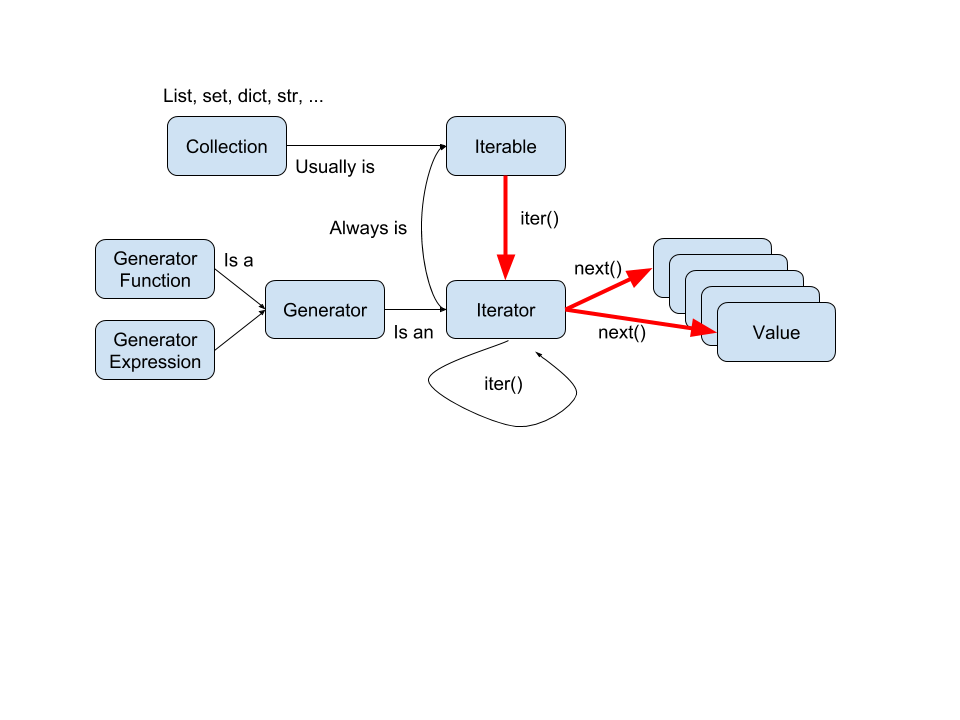

lst = [3,2,1]
lst_iter = iter(lst)
lst_iter
<list_iterator at 0x7f85d01b0fa0>
iter(lst_iter)
<list_iterator at 0x7f85d01b0fa0>
next(lst_iter)
3
next(lst_iter)
2
yield¶def counter(start, end):
print('Entering counter generator')
current = start
while current < end:
yield current
current += 1
counter(1, 10)
<generator object counter at 0x7f85d0150890>
x = counter(1,10)
next(x)
Entering counter generator
1
next(x)
2
next(x)
3
Equivalent list code:
def counter_list(start, end):
print('Entering counter function')
result = []
current = start
while current < end:
#yield current
result.append(current)
current += 1
return result
counter_list(1, 10)
Entering counter function
[1, 2, 3, 4, 5, 6, 7, 8, 9]
def counter(start, end):
print('Entering counter generator')
current = start
while current < end:
print('Generate the value', current)
yield current
current += 1
for x in counter(1, 10_000):
print('Use the value', x)
if x > 3:
break
Entering counter generator Generate the value 1 Use the value 1 Generate the value 2 Use the value 2 Generate the value 3 Use the value 3 Generate the value 4 Use the value 4
def counter_list(start, end):
print('Entering counter function')
result = []
current = start
while current < end:
#yield current
print('Generate the value', current)
result.append(current)
current += 1
return result
for x in counter_list(1, 10):
print('Use the value', x)
if x > 3:
break
Entering counter function Generate the value 1 Generate the value 2 Generate the value 3 Generate the value 4 Generate the value 5 Generate the value 6 Generate the value 7 Generate the value 8 Generate the value 9 Use the value 1 Use the value 2 Use the value 3 Use the value 4
(Back to the generator version)
def counter(start, end):
print('Entering counter generator')
current = start
while current < end:
yield current
current += 1
x = counter(1,10)
list(x)
Entering counter generator
[1, 2, 3, 4, 5, 6, 7, 8, 9]
type(counter)
function
type(counter(1, 10))
generator
next(x)
--------------------------------------------------------------------------- StopIteration Traceback (most recent call last) <ipython-input-21-92de4e9f6b1e> in <module> ----> 1 next(x) StopIteration:
for item in counter(1, 10):
print(item, end=' ')
Entering counter generator 1 2 3 4 5 6 7 8 9
def short_gen():
if False:
yield
return 'The return value'
g = short_gen()
g
<generator object short_gen at 0x7f85d00dbe40>
next(g)
--------------------------------------------------------------------------- StopIteration Traceback (most recent call last) <ipython-input-26-e734f8aca5ac> in <module> ----> 1 next(g) StopIteration: The return value
def build_my_list():
lst = []
for something in something_else:
lst.append(something)
return lst
def build_my_gen():
for something in something_else:
yield something
list(build_my_gen()) is equivalent to build_my_list()
Generators only use enough memory to produce a single value at time
Lists have all the values present in memory at once
yield can also be used as a expression, along with the send() method
def accumulator(start=0):
current = start
while True:
current += (yield current)
# output(current)
# suspend the generator
# tmp = input()
# current += tmp
x = accumulator()
next(x) # equivalent to x.send(None)
0
x.send(1)
1
x.send(1)
2
x.send(10)
12
Illustration of memory advantage of using iterators/generators
import sys
max_mem_usage = 0
for line in open('./data/hamlet.txt'):
max_mem_usage = max(
max_mem_usage,
sys.getsizeof(line)
)
print(max_mem_usage)
124
!ls -lh ./data/hamlet.txt
-rw-r--r-- 1 rick446 rick446 173K Sep 11 2020 ./data/hamlet.txt
hamlet_lines = open('./data/hamlet.txt').readlines()
total_mem_usage = sum([
sys.getsizeof(line) for line in hamlet_lines
]) + sys.getsizeof(hamlet_lines)
total_mem_usage
347341
def gen1(prefix, n):
for i in range(n):
yield prefix, i
def gen2(a, b):
# # this is _Very_ wrong
# gen1('a-prefix', a)
# gen1('b-prefix', b)
# # this is wrong, but better
# yield gen1('a-prefix', a)
# yield gen1('b-prefix', b)
# # This is right, but ugly
# for carrot in gen1('a-prefix', a):
# yield carrot
# for cabbage in gen1('b-prefix', b):
# yield cabbage
# Preferred way to delegate to sub-generators
yield from gen1('a-prefix', a)
yield from gen1('b-prefix', b)
for item in gen2(5, 3):
print(item)
('a-prefix', 0)
('a-prefix', 1)
('a-prefix', 2)
('a-prefix', 3)
('a-prefix', 4)
('b-prefix', 0)
('b-prefix', 1)
('b-prefix', 2)
You can yield from any iterable object
def mycat(filename1, filename2):
with open(filename1) as f1:
for line in f1:
yield line
with open(filename2) as f2:
yield from f2
lines = list(mycat('./data/hamlet.txt', './data/poem.txt'))
lines[-2:]
['I took the one less traveled by,\t\n', 'And that has made all the difference.\n']
What about return?
def producing_return_value():
yield 1
yield 2
return 'return value'
list(producing_return_value())
[1, 2]
def using_return_value():
rv = yield from producing_return_value()
print('I got the return value', rv)
list(using_return_value())
I got the return value return value
[1, 2]
x = producing_return_value()
next(x)
next(x)
try:
next(x)
except StopIteration as si:
print(f'StopIteration.value = {si.value!r}')
StopIteration.value = 'return value'
data = yield from socket.recv_async_data()
What does for x in sequence: really do?
seq = range(4)
for x in seq:
print(x)
0 1 2 3
seq
range(0, 4)
iter_seq = iter(seq)
print(iter_seq)
<range_iterator object at 0x7f85d010a240>
iter_seq = iter(seq) # __iter__
while True:
try:
x = next(iter_seq) # __next__
except StopIteration:
break
print(x) # loop body
0 1 2 3
x = reversed([1,2,3]) # __reversed__ (?)
x
<list_reverseiterator at 0x7f85d01747f0>
x.__next__() # this is what Python calls when you say next(x)
3
next(x)
2
Generators are their own iterators (which are also iterable):
x = counter(0, 4)
print(x)
<generator object counter at 0x7f85c97f2430>
print(iter(x))
<generator object counter at 0x7f85c97f2430>
x is iter(x) #
True
def isiterator(x):
try:
return x is iter(x)
except:
return False
for item in counter(0, 4):
print(item)
Entering counter generator 0 1 2 3
x = counter(0, 4)
while True:
next(x)
Entering counter generator
--------------------------------------------------------------------------- StopIteration Traceback (most recent call last) <ipython-input-82-b1b414e633b5> in <module> 1 x = counter(0, 4) 2 while True: ----> 3 next(x) StopIteration:
We can also define our own iterator classes (though generators are usually more readable):
class Counter:
"""This is the 'iterable' object"""
def __init__(self, start, end):
self._start = start
self._end = end
def __iter__(self):
return CounterIterator(self._start, self._end)
class CounterIterator:
"""This is the iterator"""
def __init__(self, start, end):
self._cur = start
self._end = end
def __iter__(self):
return self
def __next__(self):
if self._cur >= self._end:
raise StopIteration
result = self._cur
self._cur += 1
return result
ctr = Counter(0, 5)
print(list(ctr))
[0, 1, 2, 3, 4]
class Counter:
def __init__(self, start, end):
self._start = start
self._end = end
def __iter__(self):
"""iter(Counter(...)) returns a generator (which is also an iterator)"""
cur = self._start
while cur < self._end:
yield cur
cur += 1
ctr = Counter(0, 5)
print(list(ctr))
[0, 1, 2, 3, 4]
class TreeNode:
def __init__(self, value, left=None, right=None):
self.value = value
self.left = left
self.right = right
def __repr__(self):
return f'<TreeNode {self.value}>'
def preOrder(self):
yield self
if self.left:
yield from self.left.preOrder()
if self.right:
yield from self.right.preOrder()
def inOrder(self):
if self.left:
yield from self.left.inOrder()
yield self
if self.right:
yield from self.right.inOrder()
def postOrder(self):
if self.left:
yield from self.left.postOrder()
if self.right:
yield from self.right.postOrder()
yield self
tree = TreeNode('root',
TreeNode('left',
TreeNode('left-1'),
),
TreeNode('right')
)
print(list(tree.preOrder()))
print(list(tree.inOrder()))
print(list(tree.postOrder()))
[<TreeNode root>, <TreeNode left>, <TreeNode left-1>, <TreeNode right>] [<TreeNode left-1>, <TreeNode left>, <TreeNode root>, <TreeNode right>] [<TreeNode left-1>, <TreeNode left>, <TreeNode right>, <TreeNode root>]
[2*x for x in range(4)]
[0, 2, 4, 6]
{2*x for x in range(4)}
{0, 2, 4, 6}
{2*x:'y' for x in range(4)}
{0: 'y', 2: 'y', 4: 'y', 6: 'y'}
(x for x in range(10) if x % 2 == 0)
<generator object <genexpr> at 0x7f85d01842e0>
gen = ( x
for x in range(10)
if x % 2 == 0
)
next(gen)
0
next(gen)
2
list(gen)
[4, 6, 8]
'-'.join(str(x) for x in range(1, 20, 3))
'1-4-7-10-13-16-19'
gen = range(10)
gen = ( x for x in gen if x % 2 == 0 ) # filter
gen = ( x * 2 for x in gen ) # map
list(gen)
[0, 4, 8, 12, 16]
pow2 = [2 ** i for i in range(10)]
pow2
[1, 2, 4, 8, 16, 32, 64, 128, 256, 512]
pow2 = list(2 ** i for i in range(10))
pow2
[1, 2, 4, 8, 16, 32, 64, 128, 256, 512]
pow2 = tuple(2 ** i for i in range(10))
pow2
(1, 2, 4, 8, 16, 32, 64, 128, 256, 512)
lst = list('abcdefghijklmnopqrstuvwxyz')
lst[:10]
['a', 'b', 'c', 'd', 'e', 'f', 'g', 'h', 'i', 'j']
for position, value in enumerate(lst[:10]):
print(position, value)
0 a 1 b 2 c 3 d 4 e 5 f 6 g 7 h 8 i 9 j
stooges = 'Larry Moe Curley'.split()
for i in range(len(stooges)):
print(i, stooges[i])
0 Larry 1 Moe 2 Curley
for i, stooge in enumerate(stooges):
print(i, stooge)
0 Larry 1 Moe 2 Curley
lst1 = lst[5:]
for x, y in zip(lst, lst1):
print(x, y, end=' - ')
a f - b g - c h - d i - e j - f k - g l - h m - i n - j o - k p - l q - m r - n s - o t - p u - q v - r w - s x - t y - u z -
lst1 = lst[5:]
for i, (x, y) in enumerate(zip(lst, lst1)):
print(i, x, y, end=' - ')
0 a f - 1 b g - 2 c h - 3 d i - 4 e j - 5 f k - 6 g l - 7 h m - 8 i n - 9 j o - 10 k p - 11 l q - 12 m r - 13 n s - 14 o t - 15 p u - 16 q v - 17 r w - 18 s x - 19 t y - 20 u z -
lst1 = lst[5:]
for x, y, z in zip(lst, lst1, lst1):
print(x, y, z, end=' - ')
a f f - b g g - c h h - d i i - e j j - f k k - g l l - h m m - i n n - j o o - k p p - l q q - m r r - n s s - o t t - p u u - q v v - r w w - s x x - t y y - u z z -
itertools module¶itertools provides a number of "higher-order iterators" that allow you to combine iterators in interesting ways.
import itertools
itertools?
ranks = '2 3 4 5 6 7 8 9 10 J Q K A'.split()
suits = 'diamonds hearts spades clubs'.split()
ranks
['2', '3', '4', '5', '6', '7', '8', '9', '10', 'J', 'Q', 'K', 'A']
list(itertools.product(suits, ranks))
[('diamonds', '2'),
('diamonds', '3'),
('diamonds', '4'),
('diamonds', '5'),
('diamonds', '6'),
('diamonds', '7'),
('diamonds', '8'),
('diamonds', '9'),
('diamonds', '10'),
('diamonds', 'J'),
('diamonds', 'Q'),
('diamonds', 'K'),
('diamonds', 'A'),
('hearts', '2'),
('hearts', '3'),
('hearts', '4'),
('hearts', '5'),
('hearts', '6'),
('hearts', '7'),
('hearts', '8'),
('hearts', '9'),
('hearts', '10'),
('hearts', 'J'),
('hearts', 'Q'),
('hearts', 'K'),
('hearts', 'A'),
('spades', '2'),
('spades', '3'),
('spades', '4'),
('spades', '5'),
('spades', '6'),
('spades', '7'),
('spades', '8'),
('spades', '9'),
('spades', '10'),
('spades', 'J'),
('spades', 'Q'),
('spades', 'K'),
('spades', 'A'),
('clubs', '2'),
('clubs', '3'),
('clubs', '4'),
('clubs', '5'),
('clubs', '6'),
('clubs', '7'),
('clubs', '8'),
('clubs', '9'),
('clubs', '10'),
('clubs', 'J'),
('clubs', 'Q'),
('clubs', 'K'),
('clubs', 'A')]
dimensions = [suits, ranks]
list(itertools.product(*dimensions))
[('diamonds', '2'),
('diamonds', '3'),
('diamonds', '4'),
('diamonds', '5'),
('diamonds', '6'),
('diamonds', '7'),
('diamonds', '8'),
('diamonds', '9'),
('diamonds', '10'),
('diamonds', 'J'),
('diamonds', 'Q'),
('diamonds', 'K'),
('diamonds', 'A'),
('hearts', '2'),
('hearts', '3'),
('hearts', '4'),
('hearts', '5'),
('hearts', '6'),
('hearts', '7'),
('hearts', '8'),
('hearts', '9'),
('hearts', '10'),
('hearts', 'J'),
('hearts', 'Q'),
('hearts', 'K'),
('hearts', 'A'),
('spades', '2'),
('spades', '3'),
('spades', '4'),
('spades', '5'),
('spades', '6'),
('spades', '7'),
('spades', '8'),
('spades', '9'),
('spades', '10'),
('spades', 'J'),
('spades', 'Q'),
('spades', 'K'),
('spades', 'A'),
('clubs', '2'),
('clubs', '3'),
('clubs', '4'),
('clubs', '5'),
('clubs', '6'),
('clubs', '7'),
('clubs', '8'),
('clubs', '9'),
('clubs', '10'),
('clubs', 'J'),
('clubs', 'Q'),
('clubs', 'K'),
('clubs', 'A')]
from itertools import chain, count, groupby
# chain links multiple iterators end-to-end
xs = range(10)
ys = 'abcdef'
list(chain(xs, ys))
[0, 1, 2, 3, 4, 5, 6, 7, 8, 9, 'a', 'b', 'c', 'd', 'e', 'f']
def mycat(filenames):
files = (open(fn) for fn in filenames)
return chain.from_iterable(files)
for line in mycat(['./data/hamlet.txt', './data/poem.txt']):
print(line, end='')
The Tragedy of Hamlet, Prince of Denmark Shakespeare homepage | Hamlet | Entire play ACT I SCENE I. Elsinore. A platform before the castle. FRANCISCO at his post. Enter to him BERNARDO BERNARDO Who's there? FRANCISCO Nay, answer me: stand, and unfold yourself. BERNARDO Long live the king! FRANCISCO Bernardo? BERNARDO He. FRANCISCO You come most carefully upon your hour. BERNARDO 'Tis now struck twelve; get thee to bed, Francisco. FRANCISCO For this relief much thanks: 'tis bitter cold, And I am sick at heart. BERNARDO Have you had quiet guard? FRANCISCO Not a mouse stirring. BERNARDO Well, good night. If you do meet Horatio and Marcellus, The rivals of my watch, bid them make haste. FRANCISCO I think I hear them. Stand, ho! Who's there? Enter HORATIO and MARCELLUS HORATIO Friends to this ground. MARCELLUS And liegemen to the Dane. FRANCISCO Give you good night. MARCELLUS O, farewell, honest soldier: Who hath relieved you? FRANCISCO Bernardo has my place. Give you good night. Exit MARCELLUS Holla! Bernardo! BERNARDO Say, What, is Horatio there? HORATIO A piece of him. BERNARDO Welcome, Horatio: welcome, good Marcellus. MARCELLUS What, has this thing appear'd again to-night? BERNARDO I have seen nothing. MARCELLUS Horatio says 'tis but our fantasy, And will not let belief take hold of him Touching this dreaded sight, twice seen of us: Therefore I have entreated him along With us to watch the minutes of this night; That if again this apparition come, He may approve our eyes and speak to it. HORATIO Tush, tush, 'twill not appear. BERNARDO Sit down awhile; And let us once again assail your ears, That are so fortified against our story What we have two nights seen. HORATIO Well, sit we down, And let us hear Bernardo speak of this. BERNARDO Last night of all, When yond same star that's westward from the pole Had made his course to illume that part of heaven Where now it burns, Marcellus and myself, The bell then beating one,-- Enter Ghost MARCELLUS Peace, break thee off; look, where it comes again! BERNARDO In the same figure, like the king that's dead. MARCELLUS Thou art a scholar; speak to it, Horatio. BERNARDO Looks it not like the king? mark it, Horatio. HORATIO Most like: it harrows me with fear and wonder. BERNARDO It would be spoke to. MARCELLUS Question it, Horatio. HORATIO What art thou that usurp'st this time of night, Together with that fair and warlike form In which the majesty of buried Denmark Did sometimes march? by heaven I charge thee, speak! MARCELLUS It is offended. BERNARDO See, it stalks away! HORATIO Stay! speak, speak! I charge thee, speak! Exit Ghost MARCELLUS 'Tis gone, and will not answer. BERNARDO How now, Horatio! you tremble and look pale: Is not this something more than fantasy? What think you on't? HORATIO Before my God, I might not this believe Without the sensible and true avouch Of mine own eyes. MARCELLUS Is it not like the king? HORATIO As thou art to thyself: Such was the very armour he had on When he the ambitious Norway combated; So frown'd he once, when, in an angry parle, He smote the sledded Polacks on the ice. 'Tis strange. MARCELLUS Thus twice before, and jump at this dead hour, With martial stalk hath he gone by our watch. HORATIO In what particular thought to work I know not; But in the gross and scope of my opinion, This bodes some strange eruption to our state. MARCELLUS Good now, sit down, and tell me, he that knows, Why this same strict and most observant watch So nightly toils the subject of the land, And why such daily cast of brazen cannon, And foreign mart for implements of war; Why such impress of shipwrights, whose sore task Does not divide the Sunday from the week; What might be toward, that this sweaty haste Doth make the night joint-labourer with the day: Who is't that can inform me? HORATIO That can I; At least, the whisper goes so. Our last king, Whose image even but now appear'd to us, Was, as you know, by Fortinbras of Norway, Thereto prick'd on by a most emulate pride, Dared to the combat; in which our valiant Hamlet-- For so this side of our known world esteem'd him-- Did slay this Fortinbras; who by a seal'd compact, Well ratified by law and heraldry, Did forfeit, with his life, all those his lands Which he stood seized of, to the conqueror: Against the which, a moiety competent Was gaged by our king; which had return'd To the inheritance of Fortinbras, Had he been vanquisher; as, by the same covenant, And carriage of the article design'd, His fell to Hamlet. Now, sir, young Fortinbras, Of unimproved mettle hot and full, Hath in the skirts of Norway here and there Shark'd up a list of lawless resolutes, For food and diet, to some enterprise That hath a stomach in't; which is no other-- As it doth well appear unto our state-- But to recover of us, by strong hand And terms compulsatory, those foresaid lands So by his father lost: and this, I take it, Is the main motive of our preparations, The source of this our watch and the chief head Of this post-haste and romage in the land. BERNARDO I think it be no other but e'en so: Well may it sort that this portentous figure Comes armed through our watch; so like the king That was and is the question of these wars. HORATIO A mote it is to trouble the mind's eye. In the most high and palmy state of Rome, A little ere the mightiest Julius fell, The graves stood tenantless and the sheeted dead Did squeak and gibber in the Roman streets: As stars with trains of fire and dews of blood, Disasters in the sun; and the moist star Upon whose influence Neptune's empire stands Was sick almost to doomsday with eclipse: And even the like precurse of fierce events, As harbingers preceding still the fates And prologue to the omen coming on, Have heaven and earth together demonstrated Unto our climatures and countrymen.-- But soft, behold! lo, where it comes again! Re-enter Ghost I'll cross it, though it blast me. Stay, illusion! If thou hast any sound, or use of voice, Speak to me: If there be any good thing to be done, That may to thee do ease and grace to me, Speak to me: Cock crows If thou art privy to thy country's fate, Which, happily, foreknowing may avoid, O, speak! Or if thou hast uphoarded in thy life Extorted treasure in the womb of earth, For which, they say, you spirits oft walk in death, Speak of it: stay, and speak! Stop it, Marcellus. MARCELLUS Shall I strike at it with my partisan? HORATIO Do, if it will not stand. BERNARDO 'Tis here! HORATIO 'Tis here! MARCELLUS 'Tis gone! Exit Ghost We do it wrong, being so majestical, To offer it the show of violence; For it is, as the air, invulnerable, And our vain blows malicious mockery. BERNARDO It was about to speak, when the cock crew. HORATIO And then it started like a guilty thing Upon a fearful summons. I have heard, The cock, that is the trumpet to the morn, Doth with his lofty and shrill-sounding throat Awake the god of day; and, at his warning, Whether in sea or fire, in earth or air, The extravagant and erring spirit hies To his confine: and of the truth herein This present object made probation. MARCELLUS It faded on the crowing of the cock. Some say that ever 'gainst that season comes Wherein our Saviour's birth is celebrated, The bird of dawning singeth all night long: And then, they say, no spirit dares stir abroad; The nights are wholesome; then no planets strike, No fairy takes, nor witch hath power to charm, So hallow'd and so gracious is the time. HORATIO So have I heard and do in part believe it. But, look, the morn, in russet mantle clad, Walks o'er the dew of yon high eastward hill: Break we our watch up; and by my advice, Let us impart what we have seen to-night Unto young Hamlet; for, upon my life, This spirit, dumb to us, will speak to him. Do you consent we shall acquaint him with it, As needful in our loves, fitting our duty? MARCELLUS Let's do't, I pray; and I this morning know Where we shall find him most conveniently. Exeunt SCENE II. A room of state in the castle. Enter KING CLAUDIUS, QUEEN GERTRUDE, HAMLET, POLONIUS, LAERTES, VOLTIMAND, CORNELIUS, Lords, and Attendants KING CLAUDIUS Though yet of Hamlet our dear brother's death The memory be green, and that it us befitted To bear our hearts in grief and our whole kingdom To be contracted in one brow of woe, Yet so far hath discretion fought with nature That we with wisest sorrow think on him, Together with remembrance of ourselves. Therefore our sometime sister, now our queen, The imperial jointress to this warlike state, Have we, as 'twere with a defeated joy,-- With an auspicious and a dropping eye, With mirth in funeral and with dirge in marriage, In equal scale weighing delight and dole,-- Taken to wife: nor have we herein barr'd Your better wisdoms, which have freely gone With this affair along. For all, our thanks. Now follows, that you know, young Fortinbras, Holding a weak supposal of our worth, Or thinking by our late dear brother's death Our state to be disjoint and out of frame, Colleagued with the dream of his advantage, He hath not fail'd to pester us with message, Importing the surrender of those lands Lost by his father, with all bonds of law, To our most valiant brother. So much for him. Now for ourself and for this time of meeting: Thus much the business is: we have here writ To Norway, uncle of young Fortinbras,-- Who, impotent and bed-rid, scarcely hears Of this his nephew's purpose,--to suppress His further gait herein; in that the levies, The lists and full proportions, are all made Out of his subject: and we here dispatch You, good Cornelius, and you, Voltimand, For bearers of this greeting to old Norway; Giving to you no further personal power To business with the king, more than the scope Of these delated articles allow. Farewell, and let your haste commend your duty. CORNELIUS VOLTIMAND In that and all things will we show our duty. KING CLAUDIUS We doubt it nothing: heartily farewell. Exeunt VOLTIMAND and CORNELIUS And now, Laertes, what's the news with you? You told us of some suit; what is't, Laertes? You cannot speak of reason to the Dane, And loose your voice: what wouldst thou beg, Laertes, That shall not be my offer, not thy asking? The head is not more native to the heart, The hand more instrumental to the mouth, Than is the throne of Denmark to thy father. What wouldst thou have, Laertes? LAERTES My dread lord, Your leave and favour to return to France; From whence though willingly I came to Denmark, To show my duty in your coronation, Yet now, I must confess, that duty done, My thoughts and wishes bend again toward France And bow them to your gracious leave and pardon. KING CLAUDIUS Have you your father's leave? What says Polonius? LORD POLONIUS He hath, my lord, wrung from me my slow leave By laboursome petition, and at last Upon his will I seal'd my hard consent: I do beseech you, give him leave to go. KING CLAUDIUS Take thy fair hour, Laertes; time be thine, And thy best graces spend it at thy will! But now, my cousin Hamlet, and my son,-- HAMLET [Aside] A little more than kin, and less than kind. KING CLAUDIUS How is it that the clouds still hang on you? HAMLET Not so, my lord; I am too much i' the sun. QUEEN GERTRUDE Good Hamlet, cast thy nighted colour off, And let thine eye look like a friend on Denmark. Do not for ever with thy vailed lids Seek for thy noble father in the dust: Thou know'st 'tis common; all that lives must die, Passing through nature to eternity. HAMLET Ay, madam, it is common. QUEEN GERTRUDE If it be, Why seems it so particular with thee? HAMLET Seems, madam! nay it is; I know not 'seems.' 'Tis not alone my inky cloak, good mother, Nor customary suits of solemn black, Nor windy suspiration of forced breath, No, nor the fruitful river in the eye, Nor the dejected 'havior of the visage, Together with all forms, moods, shapes of grief, That can denote me truly: these indeed seem, For they are actions that a man might play: But I have that within which passeth show; These but the trappings and the suits of woe. KING CLAUDIUS 'Tis sweet and commendable in your nature, Hamlet, To give these mourning duties to your father: But, you must know, your father lost a father; That father lost, lost his, and the survivor bound In filial obligation for some term To do obsequious sorrow: but to persever In obstinate condolement is a course Of impious stubbornness; 'tis unmanly grief; It shows a will most incorrect to heaven, A heart unfortified, a mind impatient, An understanding simple and unschool'd: For what we know must be and is as common As any the most vulgar thing to sense, Why should we in our peevish opposition Take it to heart? Fie! 'tis a fault to heaven, A fault against the dead, a fault to nature, To reason most absurd: whose common theme Is death of fathers, and who still hath cried, From the first corse till he that died to-day, 'This must be so.' We pray you, throw to earth This unprevailing woe, and think of us As of a father: for let the world take note, You are the most immediate to our throne; And with no less nobility of love Than that which dearest father bears his son, Do I impart toward you. For your intent In going back to school in Wittenberg, It is most retrograde to our desire: And we beseech you, bend you to remain Here, in the cheer and comfort of our eye, Our chiefest courtier, cousin, and our son. QUEEN GERTRUDE Let not thy mother lose her prayers, Hamlet: I pray thee, stay with us; go not to Wittenberg. HAMLET I shall in all my best obey you, madam. KING CLAUDIUS Why, 'tis a loving and a fair reply: Be as ourself in Denmark. Madam, come; This gentle and unforced accord of Hamlet Sits smiling to my heart: in grace whereof, No jocund health that Denmark drinks to-day, But the great cannon to the clouds shall tell, And the king's rouse the heavens all bruit again, Re-speaking earthly thunder. Come away. Exeunt all but HAMLET HAMLET O, that this too too solid flesh would melt Thaw and resolve itself into a dew! Or that the Everlasting had not fix'd His canon 'gainst self-slaughter! O God! God! How weary, stale, flat and unprofitable, Seem to me all the uses of this world! Fie on't! ah fie! 'tis an unweeded garden, That grows to seed; things rank and gross in nature Possess it merely. That it should come to this! But two months dead: nay, not so much, not two: So excellent a king; that was, to this, Hyperion to a satyr; so loving to my mother That he might not beteem the winds of heaven Visit her face too roughly. Heaven and earth! Must I remember? why, she would hang on him, As if increase of appetite had grown By what it fed on: and yet, within a month-- Let me not think on't--Frailty, thy name is woman!-- A little month, or ere those shoes were old With which she follow'd my poor father's body, Like Niobe, all tears:--why she, even she-- O, God! a beast, that wants discourse of reason, Would have mourn'd longer--married with my uncle, My father's brother, but no more like my father Than I to Hercules: within a month: Ere yet the salt of most unrighteous tears Had left the flushing in her galled eyes, She married. O, most wicked speed, to post With such dexterity to incestuous sheets! It is not nor it cannot come to good: But break, my heart; for I must hold my tongue. Enter HORATIO, MARCELLUS, and BERNARDO HORATIO Hail to your lordship! HAMLET I am glad to see you well: Horatio,--or I do forget myself. HORATIO The same, my lord, and your poor servant ever. HAMLET Sir, my good friend; I'll change that name with you: And what make you from Wittenberg, Horatio? Marcellus? MARCELLUS My good lord-- HAMLET I am very glad to see you. Good even, sir. But what, in faith, make you from Wittenberg? HORATIO A truant disposition, good my lord. HAMLET I would not hear your enemy say so, Nor shall you do mine ear that violence, To make it truster of your own report Against yourself: I know you are no truant. But what is your affair in Elsinore? We'll teach you to drink deep ere you depart. HORATIO My lord, I came to see your father's funeral. HAMLET I pray thee, do not mock me, fellow-student; I think it was to see my mother's wedding. HORATIO Indeed, my lord, it follow'd hard upon. HAMLET Thrift, thrift, Horatio! the funeral baked meats Did coldly furnish forth the marriage tables. Would I had met my dearest foe in heaven Or ever I had seen that day, Horatio! My father!--methinks I see my father. HORATIO Where, my lord? HAMLET In my mind's eye, Horatio. HORATIO I saw him once; he was a goodly king. HAMLET He was a man, take him for all in all, I shall not look upon his like again. HORATIO My lord, I think I saw him yesternight. HAMLET Saw? who? HORATIO My lord, the king your father. HAMLET The king my father! HORATIO Season your admiration for awhile With an attent ear, till I may deliver, Upon the witness of these gentlemen, This marvel to you. HAMLET For God's love, let me hear. HORATIO Two nights together had these gentlemen, Marcellus and Bernardo, on their watch, In the dead vast and middle of the night, Been thus encounter'd. A figure like your father, Armed at point exactly, cap-a-pe, Appears before them, and with solemn march Goes slow and stately by them: thrice he walk'd By their oppress'd and fear-surprised eyes, Within his truncheon's length; whilst they, distilled Almost to jelly with the act of fear, Stand dumb and speak not to him. This to me In dreadful secrecy impart they did; And I with them the third night kept the watch; Where, as they had deliver'd, both in time, Form of the thing, each word made true and good, The apparition comes: I knew your father; These hands are not more like. HAMLET But where was this? MARCELLUS My lord, upon the platform where we watch'd. HAMLET Did you not speak to it? HORATIO My lord, I did; But answer made it none: yet once methought It lifted up its head and did address Itself to motion, like as it would speak; But even then the morning cock crew loud, And at the sound it shrunk in haste away, And vanish'd from our sight. HAMLET 'Tis very strange. HORATIO As I do live, my honour'd lord, 'tis true; And we did think it writ down in our duty To let you know of it. HAMLET Indeed, indeed, sirs, but this troubles me. Hold you the watch to-night? MARCELLUS BERNARDO We do, my lord. HAMLET Arm'd, say you? MARCELLUS BERNARDO Arm'd, my lord. HAMLET From top to toe? MARCELLUS BERNARDO My lord, from head to foot. HAMLET Then saw you not his face? HORATIO O, yes, my lord; he wore his beaver up. HAMLET What, look'd he frowningly? HORATIO A countenance more in sorrow than in anger. HAMLET Pale or red? HORATIO Nay, very pale. HAMLET And fix'd his eyes upon you? HORATIO Most constantly. HAMLET I would I had been there. HORATIO It would have much amazed you. HAMLET Very like, very like. Stay'd it long? HORATIO While one with moderate haste might tell a hundred. MARCELLUS BERNARDO Longer, longer. HORATIO Not when I saw't. HAMLET His beard was grizzled--no? HORATIO It was, as I have seen it in his life, A sable silver'd. HAMLET I will watch to-night; Perchance 'twill walk again. HORATIO I warrant it will. HAMLET If it assume my noble father's person, I'll speak to it, though hell itself should gape And bid me hold my peace. I pray you all, If you have hitherto conceal'd this sight, Let it be tenable in your silence still; And whatsoever else shall hap to-night, Give it an understanding, but no tongue: I will requite your loves. So, fare you well: Upon the platform, 'twixt eleven and twelve, I'll visit you. All Our duty to your honour. HAMLET Your loves, as mine to you: farewell. Exeunt all but HAMLET My father's spirit in arms! all is not well; I doubt some foul play: would the night were come! Till then sit still, my soul: foul deeds will rise, Though all the earth o'erwhelm them, to men's eyes. Exit SCENE III. A room in Polonius' house. Enter LAERTES and OPHELIA LAERTES My necessaries are embark'd: farewell: And, sister, as the winds give benefit And convoy is assistant, do not sleep, But let me hear from you. OPHELIA Do you doubt that? LAERTES For Hamlet and the trifling of his favour, Hold it a fashion and a toy in blood, A violet in the youth of primy nature, Forward, not permanent, sweet, not lasting, The perfume and suppliance of a minute; No more. OPHELIA No more but so? LAERTES Think it no more; For nature, crescent, does not grow alone In thews and bulk, but, as this temple waxes, The inward service of the mind and soul Grows wide withal. Perhaps he loves you now, And now no soil nor cautel doth besmirch The virtue of his will: but you must fear, His greatness weigh'd, his will is not his own; For he himself is subject to his birth: He may not, as unvalued persons do, Carve for himself; for on his choice depends The safety and health of this whole state; And therefore must his choice be circumscribed Unto the voice and yielding of that body Whereof he is the head. Then if he says he loves you, It fits your wisdom so far to believe it As he in his particular act and place May give his saying deed; which is no further Than the main voice of Denmark goes withal. Then weigh what loss your honour may sustain, If with too credent ear you list his songs, Or lose your heart, or your chaste treasure open To his unmaster'd importunity. Fear it, Ophelia, fear it, my dear sister, And keep you in the rear of your affection, Out of the shot and danger of desire. The chariest maid is prodigal enough, If she unmask her beauty to the moon: Virtue itself 'scapes not calumnious strokes: The canker galls the infants of the spring, Too oft before their buttons be disclosed, And in the morn and liquid dew of youth Contagious blastments are most imminent. Be wary then; best safety lies in fear: Youth to itself rebels, though none else near. OPHELIA I shall the effect of this good lesson keep, As watchman to my heart. But, good my brother, Do not, as some ungracious pastors do, Show me the steep and thorny way to heaven; Whiles, like a puff'd and reckless libertine, Himself the primrose path of dalliance treads, And recks not his own rede. LAERTES O, fear me not. I stay too long: but here my father comes. Enter POLONIUS A double blessing is a double grace, Occasion smiles upon a second leave. LORD POLONIUS Yet here, Laertes! aboard, aboard, for shame! The wind sits in the shoulder of your sail, And you are stay'd for. There; my blessing with thee! And these few precepts in thy memory See thou character. Give thy thoughts no tongue, Nor any unproportioned thought his act. Be thou familiar, but by no means vulgar. Those friends thou hast, and their adoption tried, Grapple them to thy soul with hoops of steel; But do not dull thy palm with entertainment Of each new-hatch'd, unfledged comrade. Beware Of entrance to a quarrel, but being in, Bear't that the opposed may beware of thee. Give every man thy ear, but few thy voice; Take each man's censure, but reserve thy judgment. Costly thy habit as thy purse can buy, But not express'd in fancy; rich, not gaudy; For the apparel oft proclaims the man, And they in France of the best rank and station Are of a most select and generous chief in that. Neither a borrower nor a lender be; For loan oft loses both itself and friend, And borrowing dulls the edge of husbandry. This above all: to thine ownself be true, And it must follow, as the night the day, Thou canst not then be false to any man. Farewell: my blessing season this in thee! LAERTES Most humbly do I take my leave, my lord. LORD POLONIUS The time invites you; go; your servants tend. LAERTES Farewell, Ophelia; and remember well What I have said to you. OPHELIA 'Tis in my memory lock'd, And you yourself shall keep the key of it. LAERTES Farewell. Exit LORD POLONIUS What is't, Ophelia, be hath said to you? OPHELIA So please you, something touching the Lord Hamlet. LORD POLONIUS Marry, well bethought: 'Tis told me, he hath very oft of late Given private time to you; and you yourself Have of your audience been most free and bounteous: If it be so, as so 'tis put on me, And that in way of caution, I must tell you, You do not understand yourself so clearly As it behoves my daughter and your honour. What is between you? give me up the truth. OPHELIA He hath, my lord, of late made many tenders Of his affection to me. LORD POLONIUS Affection! pooh! you speak like a green girl, Unsifted in such perilous circumstance. Do you believe his tenders, as you call them? OPHELIA I do not know, my lord, what I should think. LORD POLONIUS Marry, I'll teach you: think yourself a baby; That you have ta'en these tenders for true pay, Which are not sterling. Tender yourself more dearly; Or--not to crack the wind of the poor phrase, Running it thus--you'll tender me a fool. OPHELIA My lord, he hath importuned me with love In honourable fashion. LORD POLONIUS Ay, fashion you may call it; go to, go to. OPHELIA And hath given countenance to his speech, my lord, With almost all the holy vows of heaven. LORD POLONIUS Ay, springes to catch woodcocks. I do know, When the blood burns, how prodigal the soul Lends the tongue vows: these blazes, daughter, Giving more light than heat, extinct in both, Even in their promise, as it is a-making, You must not take for fire. From this time Be somewhat scanter of your maiden presence; Set your entreatments at a higher rate Than a command to parley. For Lord Hamlet, Believe so much in him, that he is young And with a larger tether may he walk Than may be given you: in few, Ophelia, Do not believe his vows; for they are brokers, Not of that dye which their investments show, But mere implorators of unholy suits, Breathing like sanctified and pious bawds, The better to beguile. This is for all: I would not, in plain terms, from this time forth, Have you so slander any moment leisure, As to give words or talk with the Lord Hamlet. Look to't, I charge you: come your ways. OPHELIA I shall obey, my lord. Exeunt SCENE IV. The platform. Enter HAMLET, HORATIO, and MARCELLUS HAMLET The air bites shrewdly; it is very cold. HORATIO It is a nipping and an eager air. HAMLET What hour now? HORATIO I think it lacks of twelve. HAMLET No, it is struck. HORATIO Indeed? I heard it not: then it draws near the season Wherein the spirit held his wont to walk. A flourish of trumpets, and ordnance shot off, within What does this mean, my lord? HAMLET The king doth wake to-night and takes his rouse, Keeps wassail, and the swaggering up-spring reels; And, as he drains his draughts of Rhenish down, The kettle-drum and trumpet thus bray out The triumph of his pledge. HORATIO Is it a custom? HAMLET Ay, marry, is't: But to my mind, though I am native here And to the manner born, it is a custom More honour'd in the breach than the observance. This heavy-headed revel east and west Makes us traduced and tax'd of other nations: They clepe us drunkards, and with swinish phrase Soil our addition; and indeed it takes From our achievements, though perform'd at height, The pith and marrow of our attribute. So, oft it chances in particular men, That for some vicious mole of nature in them, As, in their birth--wherein they are not guilty, Since nature cannot choose his origin-- By the o'ergrowth of some complexion, Oft breaking down the pales and forts of reason, Or by some habit that too much o'er-leavens The form of plausive manners, that these men, Carrying, I say, the stamp of one defect, Being nature's livery, or fortune's star,-- Their virtues else--be they as pure as grace, As infinite as man may undergo-- Shall in the general censure take corruption From that particular fault: the dram of eale Doth all the noble substance of a doubt To his own scandal. HORATIO Look, my lord, it comes! Enter Ghost HAMLET Angels and ministers of grace defend us! Be thou a spirit of health or goblin damn'd, Bring with thee airs from heaven or blasts from hell, Be thy intents wicked or charitable, Thou comest in such a questionable shape That I will speak to thee: I'll call thee Hamlet, King, father, royal Dane: O, answer me! Let me not burst in ignorance; but tell Why thy canonized bones, hearsed in death, Have burst their cerements; why the sepulchre, Wherein we saw thee quietly inurn'd, Hath oped his ponderous and marble jaws, To cast thee up again. What may this mean, That thou, dead corse, again in complete steel Revisit'st thus the glimpses of the moon, Making night hideous; and we fools of nature So horridly to shake our disposition With thoughts beyond the reaches of our souls? Say, why is this? wherefore? what should we do? Ghost beckons HAMLET HORATIO It beckons you to go away with it, As if it some impartment did desire To you alone. MARCELLUS Look, with what courteous action It waves you to a more removed ground: But do not go with it. HORATIO No, by no means. HAMLET It will not speak; then I will follow it. HORATIO Do not, my lord. HAMLET Why, what should be the fear? I do not set my life in a pin's fee; And for my soul, what can it do to that, Being a thing immortal as itself? It waves me forth again: I'll follow it. HORATIO What if it tempt you toward the flood, my lord, Or to the dreadful summit of the cliff That beetles o'er his base into the sea, And there assume some other horrible form, Which might deprive your sovereignty of reason And draw you into madness? think of it: The very place puts toys of desperation, Without more motive, into every brain That looks so many fathoms to the sea And hears it roar beneath. HAMLET It waves me still. Go on; I'll follow thee. MARCELLUS You shall not go, my lord. HAMLET Hold off your hands. HORATIO Be ruled; you shall not go. HAMLET My fate cries out, And makes each petty artery in this body As hardy as the Nemean lion's nerve. Still am I call'd. Unhand me, gentlemen. By heaven, I'll make a ghost of him that lets me! I say, away! Go on; I'll follow thee. Exeunt Ghost and HAMLET HORATIO He waxes desperate with imagination. MARCELLUS Let's follow; 'tis not fit thus to obey him. HORATIO Have after. To what issue will this come? MARCELLUS Something is rotten in the state of Denmark. HORATIO Heaven will direct it. MARCELLUS Nay, let's follow him. Exeunt SCENE V. Another part of the platform. Enter GHOST and HAMLET HAMLET Where wilt thou lead me? speak; I'll go no further. Ghost Mark me. HAMLET I will. Ghost My hour is almost come, When I to sulphurous and tormenting flames Must render up myself. HAMLET Alas, poor ghost! Ghost Pity me not, but lend thy serious hearing To what I shall unfold. HAMLET Speak; I am bound to hear. Ghost So art thou to revenge, when thou shalt hear. HAMLET What? Ghost I am thy father's spirit, Doom'd for a certain term to walk the night, And for the day confined to fast in fires, Till the foul crimes done in my days of nature Are burnt and purged away. But that I am forbid To tell the secrets of my prison-house, I could a tale unfold whose lightest word Would harrow up thy soul, freeze thy young blood, Make thy two eyes, like stars, start from their spheres, Thy knotted and combined locks to part And each particular hair to stand on end, Like quills upon the fretful porpentine: But this eternal blazon must not be To ears of flesh and blood. List, list, O, list! If thou didst ever thy dear father love-- HAMLET O God! Ghost Revenge his foul and most unnatural murder. HAMLET Murder! Ghost Murder most foul, as in the best it is; But this most foul, strange and unnatural. HAMLET Haste me to know't, that I, with wings as swift As meditation or the thoughts of love, May sweep to my revenge. Ghost I find thee apt; And duller shouldst thou be than the fat weed That roots itself in ease on Lethe wharf, Wouldst thou not stir in this. Now, Hamlet, hear: 'Tis given out that, sleeping in my orchard, A serpent stung me; so the whole ear of Denmark Is by a forged process of my death Rankly abused: but know, thou noble youth, The serpent that did sting thy father's life Now wears his crown. HAMLET O my prophetic soul! My uncle! Ghost Ay, that incestuous, that adulterate beast, With witchcraft of his wit, with traitorous gifts,-- O wicked wit and gifts, that have the power So to seduce!--won to his shameful lust The will of my most seeming-virtuous queen: O Hamlet, what a falling-off was there! From me, whose love was of that dignity That it went hand in hand even with the vow I made to her in marriage, and to decline Upon a wretch whose natural gifts were poor To those of mine! But virtue, as it never will be moved, Though lewdness court it in a shape of heaven, So lust, though to a radiant angel link'd, Will sate itself in a celestial bed, And prey on garbage. But, soft! methinks I scent the morning air; Brief let me be. Sleeping within my orchard, My custom always of the afternoon, Upon my secure hour thy uncle stole, With juice of cursed hebenon in a vial, And in the porches of my ears did pour The leperous distilment; whose effect Holds such an enmity with blood of man That swift as quicksilver it courses through The natural gates and alleys of the body, And with a sudden vigour doth posset And curd, like eager droppings into milk, The thin and wholesome blood: so did it mine; And a most instant tetter bark'd about, Most lazar-like, with vile and loathsome crust, All my smooth body. Thus was I, sleeping, by a brother's hand Of life, of crown, of queen, at once dispatch'd: Cut off even in the blossoms of my sin, Unhousel'd, disappointed, unanel'd, No reckoning made, but sent to my account With all my imperfections on my head: O, horrible! O, horrible! most horrible! If thou hast nature in thee, bear it not; Let not the royal bed of Denmark be A couch for luxury and damned incest. But, howsoever thou pursuest this act, Taint not thy mind, nor let thy soul contrive Against thy mother aught: leave her to heaven And to those thorns that in her bosom lodge, To prick and sting her. Fare thee well at once! The glow-worm shows the matin to be near, And 'gins to pale his uneffectual fire: Adieu, adieu! Hamlet, remember me. Exit HAMLET O all you host of heaven! O earth! what else? And shall I couple hell? O, fie! Hold, hold, my heart; And you, my sinews, grow not instant old, But bear me stiffly up. Remember thee! Ay, thou poor ghost, while memory holds a seat In this distracted globe. Remember thee! Yea, from the table of my memory I'll wipe away all trivial fond records, All saws of books, all forms, all pressures past, That youth and observation copied there; And thy commandment all alone shall live Within the book and volume of my brain, Unmix'd with baser matter: yes, by heaven! O most pernicious woman! O villain, villain, smiling, damned villain! My tables,--meet it is I set it down, That one may smile, and smile, and be a villain; At least I'm sure it may be so in Denmark: Writing So, uncle, there you are. Now to my word; It is 'Adieu, adieu! remember me.' I have sworn 't. MARCELLUS HORATIO [Within] My lord, my lord,-- MARCELLUS [Within] Lord Hamlet,-- HORATIO [Within] Heaven secure him! HAMLET So be it! HORATIO [Within] Hillo, ho, ho, my lord! HAMLET Hillo, ho, ho, boy! come, bird, come. Enter HORATIO and MARCELLUS MARCELLUS How is't, my noble lord? HORATIO What news, my lord? HAMLET O, wonderful! HORATIO Good my lord, tell it. HAMLET No; you'll reveal it. HORATIO Not I, my lord, by heaven. MARCELLUS Nor I, my lord. HAMLET How say you, then; would heart of man once think it? But you'll be secret? HORATIO MARCELLUS Ay, by heaven, my lord. HAMLET There's ne'er a villain dwelling in all Denmark But he's an arrant knave. HORATIO There needs no ghost, my lord, come from the grave To tell us this. HAMLET Why, right; you are i' the right; And so, without more circumstance at all, I hold it fit that we shake hands and part: You, as your business and desire shall point you; For every man has business and desire, Such as it is; and for mine own poor part, Look you, I'll go pray. HORATIO These are but wild and whirling words, my lord. HAMLET I'm sorry they offend you, heartily; Yes, 'faith heartily. HORATIO There's no offence, my lord. HAMLET Yes, by Saint Patrick, but there is, Horatio, And much offence too. Touching this vision here, It is an honest ghost, that let me tell you: For your desire to know what is between us, O'ermaster 't as you may. And now, good friends, As you are friends, scholars and soldiers, Give me one poor request. HORATIO What is't, my lord? we will. HAMLET Never make known what you have seen to-night. HORATIO MARCELLUS My lord, we will not. HAMLET Nay, but swear't. HORATIO In faith, My lord, not I. MARCELLUS Nor I, my lord, in faith. HAMLET Upon my sword. MARCELLUS We have sworn, my lord, already. HAMLET Indeed, upon my sword, indeed. Ghost [Beneath] Swear. HAMLET Ah, ha, boy! say'st thou so? art thou there, truepenny? Come on--you hear this fellow in the cellarage-- Consent to swear. HORATIO Propose the oath, my lord. HAMLET Never to speak of this that you have seen, Swear by my sword. Ghost [Beneath] Swear. HAMLET Hic et ubique? then we'll shift our ground. Come hither, gentlemen, And lay your hands again upon my sword: Never to speak of this that you have heard, Swear by my sword. Ghost [Beneath] Swear. HAMLET Well said, old mole! canst work i' the earth so fast? A worthy pioner! Once more remove, good friends. HORATIO O day and night, but this is wondrous strange! HAMLET And therefore as a stranger give it welcome. There are more things in heaven and earth, Horatio, Than are dreamt of in your philosophy. But come; Here, as before, never, so help you mercy, How strange or odd soe'er I bear myself, As I perchance hereafter shall think meet To put an antic disposition on, That you, at such times seeing me, never shall, With arms encumber'd thus, or this headshake, Or by pronouncing of some doubtful phrase, As 'Well, well, we know,' or 'We could, an if we would,' Or 'If we list to speak,' or 'There be, an if they might,' Or such ambiguous giving out, to note That you know aught of me: this not to do, So grace and mercy at your most need help you, Swear. Ghost [Beneath] Swear. HAMLET Rest, rest, perturbed spirit! They swear So, gentlemen, With all my love I do commend me to you: And what so poor a man as Hamlet is May do, to express his love and friending to you, God willing, shall not lack. Let us go in together; And still your fingers on your lips, I pray. The time is out of joint: O cursed spite, That ever I was born to set it right! Nay, come, let's go together. Exeunt ACT II SCENE I. A room in POLONIUS' house. Enter POLONIUS and REYNALDO LORD POLONIUS Give him this money and these notes, Reynaldo. REYNALDO I will, my lord. LORD POLONIUS You shall do marvellous wisely, good Reynaldo, Before you visit him, to make inquire Of his behavior. REYNALDO My lord, I did intend it. LORD POLONIUS Marry, well said; very well said. Look you, sir, Inquire me first what Danskers are in Paris; And how, and who, what means, and where they keep, What company, at what expense; and finding By this encompassment and drift of question That they do know my son, come you more nearer Than your particular demands will touch it: Take you, as 'twere, some distant knowledge of him; As thus, 'I know his father and his friends, And in part him: ' do you mark this, Reynaldo? REYNALDO Ay, very well, my lord. LORD POLONIUS 'And in part him; but' you may say 'not well: But, if't be he I mean, he's very wild; Addicted so and so:' and there put on him What forgeries you please; marry, none so rank As may dishonour him; take heed of that; But, sir, such wanton, wild and usual slips As are companions noted and most known To youth and liberty. REYNALDO As gaming, my lord. LORD POLONIUS Ay, or drinking, fencing, swearing, quarrelling, Drabbing: you may go so far. REYNALDO My lord, that would dishonour him. LORD POLONIUS 'Faith, no; as you may season it in the charge You must not put another scandal on him, That he is open to incontinency; That's not my meaning: but breathe his faults so quaintly That they may seem the taints of liberty, The flash and outbreak of a fiery mind, A savageness in unreclaimed blood, Of general assault. REYNALDO But, my good lord,-- LORD POLONIUS Wherefore should you do this? REYNALDO Ay, my lord, I would know that. LORD POLONIUS Marry, sir, here's my drift; And I believe, it is a fetch of wit: You laying these slight sullies on my son, As 'twere a thing a little soil'd i' the working, Mark you, Your party in converse, him you would sound, Having ever seen in the prenominate crimes The youth you breathe of guilty, be assured He closes with you in this consequence; 'Good sir,' or so, or 'friend,' or 'gentleman,' According to the phrase or the addition Of man and country. REYNALDO Very good, my lord. LORD POLONIUS And then, sir, does he this--he does--what was I about to say? By the mass, I was about to say something: where did I leave? REYNALDO At 'closes in the consequence,' at 'friend or so,' and 'gentleman.' LORD POLONIUS At 'closes in the consequence,' ay, marry; He closes thus: 'I know the gentleman; I saw him yesterday, or t' other day, Or then, or then; with such, or such; and, as you say, There was a' gaming; there o'ertook in's rouse; There falling out at tennis:' or perchance, 'I saw him enter such a house of sale,' Videlicet, a brothel, or so forth. See you now; Your bait of falsehood takes this carp of truth: And thus do we of wisdom and of reach, With windlasses and with assays of bias, By indirections find directions out: So by my former lecture and advice, Shall you my son. You have me, have you not? REYNALDO My lord, I have. LORD POLONIUS God be wi' you; fare you well. REYNALDO Good my lord! LORD POLONIUS Observe his inclination in yourself. REYNALDO I shall, my lord. LORD POLONIUS And let him ply his music. REYNALDO Well, my lord. LORD POLONIUS Farewell! Exit REYNALDO Enter OPHELIA How now, Ophelia! what's the matter? OPHELIA O, my lord, my lord, I have been so affrighted! LORD POLONIUS With what, i' the name of God? OPHELIA My lord, as I was sewing in my closet, Lord Hamlet, with his doublet all unbraced; No hat upon his head; his stockings foul'd, Ungarter'd, and down-gyved to his ancle; Pale as his shirt; his knees knocking each other; And with a look so piteous in purport As if he had been loosed out of hell To speak of horrors,--he comes before me. LORD POLONIUS Mad for thy love? OPHELIA My lord, I do not know; But truly, I do fear it. LORD POLONIUS What said he? OPHELIA He took me by the wrist and held me hard; Then goes he to the length of all his arm; And, with his other hand thus o'er his brow, He falls to such perusal of my face As he would draw it. Long stay'd he so; At last, a little shaking of mine arm And thrice his head thus waving up and down, He raised a sigh so piteous and profound As it did seem to shatter all his bulk And end his being: that done, he lets me go: And, with his head over his shoulder turn'd, He seem'd to find his way without his eyes; For out o' doors he went without their helps, And, to the last, bended their light on me. LORD POLONIUS Come, go with me: I will go seek the king. This is the very ecstasy of love, Whose violent property fordoes itself And leads the will to desperate undertakings As oft as any passion under heaven That does afflict our natures. I am sorry. What, have you given him any hard words of late? OPHELIA No, my good lord, but, as you did command, I did repel his fetters and denied His access to me. LORD POLONIUS That hath made him mad. I am sorry that with better heed and judgment I had not quoted him: I fear'd he did but trifle, And meant to wreck thee; but, beshrew my jealousy! By heaven, it is as proper to our age To cast beyond ourselves in our opinions As it is common for the younger sort To lack discretion. Come, go we to the king: This must be known; which, being kept close, might move More grief to hide than hate to utter love. Exeunt SCENE II. A room in the castle. Enter KING CLAUDIUS, QUEEN GERTRUDE, ROSENCRANTZ, GUILDENSTERN, and Attendants KING CLAUDIUS Welcome, dear Rosencrantz and Guildenstern! Moreover that we much did long to see you, The need we have to use you did provoke Our hasty sending. Something have you heard Of Hamlet's transformation; so call it, Sith nor the exterior nor the inward man Resembles that it was. What it should be, More than his father's death, that thus hath put him So much from the understanding of himself, I cannot dream of: I entreat you both, That, being of so young days brought up with him, And sith so neighbour'd to his youth and havior, That you vouchsafe your rest here in our court Some little time: so by your companies To draw him on to pleasures, and to gather, So much as from occasion you may glean, Whether aught, to us unknown, afflicts him thus, That, open'd, lies within our remedy. QUEEN GERTRUDE Good gentlemen, he hath much talk'd of you; And sure I am two men there are not living To whom he more adheres. If it will please you To show us so much gentry and good will As to expend your time with us awhile, For the supply and profit of our hope, Your visitation shall receive such thanks As fits a king's remembrance. ROSENCRANTZ Both your majesties Might, by the sovereign power you have of us, Put your dread pleasures more into command Than to entreaty. GUILDENSTERN But we both obey, And here give up ourselves, in the full bent To lay our service freely at your feet, To be commanded. KING CLAUDIUS Thanks, Rosencrantz and gentle Guildenstern. QUEEN GERTRUDE Thanks, Guildenstern and gentle Rosencrantz: And I beseech you instantly to visit My too much changed son. Go, some of you, And bring these gentlemen where Hamlet is. GUILDENSTERN Heavens make our presence and our practises Pleasant and helpful to him! QUEEN GERTRUDE Ay, amen! Exeunt ROSENCRANTZ, GUILDENSTERN, and some Attendants Enter POLONIUS LORD POLONIUS The ambassadors from Norway, my good lord, Are joyfully return'd. KING CLAUDIUS Thou still hast been the father of good news. LORD POLONIUS Have I, my lord? I assure my good liege, I hold my duty, as I hold my soul, Both to my God and to my gracious king: And I do think, or else this brain of mine Hunts not the trail of policy so sure As it hath used to do, that I have found The very cause of Hamlet's lunacy. KING CLAUDIUS O, speak of that; that do I long to hear. LORD POLONIUS Give first admittance to the ambassadors; My news shall be the fruit to that great feast. KING CLAUDIUS Thyself do grace to them, and bring them in. Exit POLONIUS He tells me, my dear Gertrude, he hath found The head and source of all your son's distemper. QUEEN GERTRUDE I doubt it is no other but the main; His father's death, and our o'erhasty marriage. KING CLAUDIUS Well, we shall sift him. Re-enter POLONIUS, with VOLTIMAND and CORNELIUS Welcome, my good friends! Say, Voltimand, what from our brother Norway? VOLTIMAND Most fair return of greetings and desires. Upon our first, he sent out to suppress His nephew's levies; which to him appear'd To be a preparation 'gainst the Polack; But, better look'd into, he truly found It was against your highness: whereat grieved, That so his sickness, age and impotence Was falsely borne in hand, sends out arrests On Fortinbras; which he, in brief, obeys; Receives rebuke from Norway, and in fine Makes vow before his uncle never more To give the assay of arms against your majesty. Whereon old Norway, overcome with joy, Gives him three thousand crowns in annual fee, And his commission to employ those soldiers, So levied as before, against the Polack: With an entreaty, herein further shown, Giving a paper That it might please you to give quiet pass Through your dominions for this enterprise, On such regards of safety and allowance As therein are set down. KING CLAUDIUS It likes us well; And at our more consider'd time well read, Answer, and think upon this business. Meantime we thank you for your well-took labour: Go to your rest; at night we'll feast together: Most welcome home! Exeunt VOLTIMAND and CORNELIUS LORD POLONIUS This business is well ended. My liege, and madam, to expostulate What majesty should be, what duty is, Why day is day, night night, and time is time, Were nothing but to waste night, day and time. Therefore, since brevity is the soul of wit, And tediousness the limbs and outward flourishes, I will be brief: your noble son is mad: Mad call I it; for, to define true madness, What is't but to be nothing else but mad? But let that go. QUEEN GERTRUDE More matter, with less art. LORD POLONIUS Madam, I swear I use no art at all. That he is mad, 'tis true: 'tis true 'tis pity; And pity 'tis 'tis true: a foolish figure; But farewell it, for I will use no art. Mad let us grant him, then: and now remains That we find out the cause of this effect, Or rather say, the cause of this defect, For this effect defective comes by cause: Thus it remains, and the remainder thus. Perpend. I have a daughter--have while she is mine-- Who, in her duty and obedience, mark, Hath given me this: now gather, and surmise. Reads 'To the celestial and my soul's idol, the most beautified Ophelia,'-- That's an ill phrase, a vile phrase; 'beautified' is a vile phrase: but you shall hear. Thus: Reads 'In her excellent white bosom, these, & c.' QUEEN GERTRUDE Came this from Hamlet to her? LORD POLONIUS Good madam, stay awhile; I will be faithful. Reads 'Doubt thou the stars are fire; Doubt that the sun doth move; Doubt truth to be a liar; But never doubt I love. 'O dear Ophelia, I am ill at these numbers; I have not art to reckon my groans: but that I love thee best, O most best, believe it. Adieu. 'Thine evermore most dear lady, whilst this machine is to him, HAMLET.' This, in obedience, hath my daughter shown me, And more above, hath his solicitings, As they fell out by time, by means and place, All given to mine ear. KING CLAUDIUS But how hath she Received his love? LORD POLONIUS What do you think of me? KING CLAUDIUS As of a man faithful and honourable. LORD POLONIUS I would fain prove so. But what might you think, When I had seen this hot love on the wing-- As I perceived it, I must tell you that, Before my daughter told me--what might you, Or my dear majesty your queen here, think, If I had play'd the desk or table-book, Or given my heart a winking, mute and dumb, Or look'd upon this love with idle sight; What might you think? No, I went round to work, And my young mistress thus I did bespeak: 'Lord Hamlet is a prince, out of thy star; This must not be:' and then I precepts gave her, That she should lock herself from his resort, Admit no messengers, receive no tokens. Which done, she took the fruits of my advice; And he, repulsed--a short tale to make-- Fell into a sadness, then into a fast, Thence to a watch, thence into a weakness, Thence to a lightness, and, by this declension, Into the madness wherein now he raves, And all we mourn for. KING CLAUDIUS Do you think 'tis this? QUEEN GERTRUDE It may be, very likely. LORD POLONIUS Hath there been such a time--I'd fain know that-- That I have positively said 'Tis so,' When it proved otherwise? KING CLAUDIUS Not that I know. LORD POLONIUS [Pointing to his head and shoulder] Take this from this, if this be otherwise: If circumstances lead me, I will find Where truth is hid, though it were hid indeed Within the centre. KING CLAUDIUS How may we try it further? LORD POLONIUS You know, sometimes he walks four hours together Here in the lobby. QUEEN GERTRUDE So he does indeed. LORD POLONIUS At such a time I'll loose my daughter to him: Be you and I behind an arras then; Mark the encounter: if he love her not And be not from his reason fall'n thereon, Let me be no assistant for a state, But keep a farm and carters. KING CLAUDIUS We will try it. QUEEN GERTRUDE But, look, where sadly the poor wretch comes reading. LORD POLONIUS Away, I do beseech you, both away: I'll board him presently. Exeunt KING CLAUDIUS, QUEEN GERTRUDE, and Attendants Enter HAMLET, reading O, give me leave: How does my good Lord Hamlet? HAMLET Well, God-a-mercy. LORD POLONIUS Do you know me, my lord? HAMLET Excellent well; you are a fishmonger. LORD POLONIUS Not I, my lord. HAMLET Then I would you were so honest a man. LORD POLONIUS Honest, my lord! HAMLET Ay, sir; to be honest, as this world goes, is to be one man picked out of ten thousand. LORD POLONIUS That's very true, my lord. HAMLET For if the sun breed maggots in a dead dog, being a god kissing carrion,--Have you a daughter? LORD POLONIUS I have, my lord. HAMLET Let her not walk i' the sun: conception is a blessing: but not as your daughter may conceive. Friend, look to 't. LORD POLONIUS [Aside] How say you by that? Still harping on my daughter: yet he knew me not at first; he said I was a fishmonger: he is far gone, far gone: and truly in my youth I suffered much extremity for love; very near this. I'll speak to him again. What do you read, my lord? HAMLET Words, words, words. LORD POLONIUS What is the matter, my lord? HAMLET Between who? LORD POLONIUS I mean, the matter that you read, my lord. HAMLET Slanders, sir: for the satirical rogue says here that old men have grey beards, that their faces are wrinkled, their eyes purging thick amber and plum-tree gum and that they have a plentiful lack of wit, together with most weak hams: all which, sir, though I most powerfully and potently believe, yet I hold it not honesty to have it thus set down, for yourself, sir, should be old as I am, if like a crab you could go backward. LORD POLONIUS [Aside] Though this be madness, yet there is method in 't. Will you walk out of the air, my lord? HAMLET Into my grave. LORD POLONIUS Indeed, that is out o' the air. Aside How pregnant sometimes his replies are! a happiness that often madness hits on, which reason and sanity could not so prosperously be delivered of. I will leave him, and suddenly contrive the means of meeting between him and my daughter.--My honourable lord, I will most humbly take my leave of you. HAMLET You cannot, sir, take from me any thing that I will more willingly part withal: except my life, except my life, except my life. LORD POLONIUS Fare you well, my lord. HAMLET These tedious old fools! Enter ROSENCRANTZ and GUILDENSTERN LORD POLONIUS You go to seek the Lord Hamlet; there he is. ROSENCRANTZ [To POLONIUS] God save you, sir! Exit POLONIUS GUILDENSTERN My honoured lord! ROSENCRANTZ My most dear lord! HAMLET My excellent good friends! How dost thou, Guildenstern? Ah, Rosencrantz! Good lads, how do ye both? ROSENCRANTZ As the indifferent children of the earth. GUILDENSTERN Happy, in that we are not over-happy; On fortune's cap we are not the very button. HAMLET Nor the soles of her shoe? ROSENCRANTZ Neither, my lord. HAMLET Then you live about her waist, or in the middle of her favours? GUILDENSTERN 'Faith, her privates we. HAMLET In the secret parts of fortune? O, most true; she is a strumpet. What's the news? ROSENCRANTZ None, my lord, but that the world's grown honest. HAMLET Then is doomsday near: but your news is not true. Let me question more in particular: what have you, my good friends, deserved at the hands of fortune, that she sends you to prison hither? GUILDENSTERN Prison, my lord! HAMLET Denmark's a prison. ROSENCRANTZ Then is the world one. HAMLET A goodly one; in which there are many confines, wards and dungeons, Denmark being one o' the worst. ROSENCRANTZ We think not so, my lord. HAMLET Why, then, 'tis none to you; for there is nothing either good or bad, but thinking makes it so: to me it is a prison. ROSENCRANTZ Why then, your ambition makes it one; 'tis too narrow for your mind. HAMLET O God, I could be bounded in a nut shell and count myself a king of infinite space, were it not that I have bad dreams. GUILDENSTERN Which dreams indeed are ambition, for the very substance of the ambitious is merely the shadow of a dream. HAMLET A dream itself is but a shadow. ROSENCRANTZ Truly, and I hold ambition of so airy and light a quality that it is but a shadow's shadow. HAMLET Then are our beggars bodies, and our monarchs and outstretched heroes the beggars' shadows. Shall we to the court? for, by my fay, I cannot reason. ROSENCRANTZ GUILDENSTERN We'll wait upon you. HAMLET No such matter: I will not sort you with the rest of my servants, for, to speak to you like an honest man, I am most dreadfully attended. But, in the beaten way of friendship, what make you at Elsinore? ROSENCRANTZ To visit you, my lord; no other occasion. HAMLET Beggar that I am, I am even poor in thanks; but I thank you: and sure, dear friends, my thanks are too dear a halfpenny. Were you not sent for? Is it your own inclining? Is it a free visitation? Come, deal justly with me: come, come; nay, speak. GUILDENSTERN What should we say, my lord? HAMLET Why, any thing, but to the purpose. You were sent for; and there is a kind of confession in your looks which your modesties have not craft enough to colour: I know the good king and queen have sent for you. ROSENCRANTZ To what end, my lord? HAMLET That you must teach me. But let me conjure you, by the rights of our fellowship, by the consonancy of our youth, by the obligation of our ever-preserved love, and by what more dear a better proposer could charge you withal, be even and direct with me, whether you were sent for, or no? ROSENCRANTZ [Aside to GUILDENSTERN] What say you? HAMLET [Aside] Nay, then, I have an eye of you.--If you love me, hold not off. GUILDENSTERN My lord, we were sent for. HAMLET I will tell you why; so shall my anticipation prevent your discovery, and your secrecy to the king and queen moult no feather. I have of late--but wherefore I know not--lost all my mirth, forgone all custom of exercises; and indeed it goes so heavily with my disposition that this goodly frame, the earth, seems to me a sterile promontory, this most excellent canopy, the air, look you, this brave o'erhanging firmament, this majestical roof fretted with golden fire, why, it appears no other thing to me than a foul and pestilent congregation of vapours. What a piece of work is a man! how noble in reason! how infinite in faculty! in form and moving how express and admirable! in action how like an angel! in apprehension how like a god! the beauty of the world! the paragon of animals! And yet, to me, what is this quintessence of dust? man delights not me: no, nor woman neither, though by your smiling you seem to say so. ROSENCRANTZ My lord, there was no such stuff in my thoughts. HAMLET Why did you laugh then, when I said 'man delights not me'? ROSENCRANTZ To think, my lord, if you delight not in man, what lenten entertainment the players shall receive from you: we coted them on the way; and hither are they coming, to offer you service. HAMLET He that plays the king shall be welcome; his majesty shall have tribute of me; the adventurous knight shall use his foil and target; the lover shall not sigh gratis; the humourous man shall end his part in peace; the clown shall make those laugh whose lungs are tickled o' the sere; and the lady shall say her mind freely, or the blank verse shall halt for't. What players are they? ROSENCRANTZ Even those you were wont to take delight in, the tragedians of the city. HAMLET How chances it they travel? their residence, both in reputation and profit, was better both ways. ROSENCRANTZ I think their inhibition comes by the means of the late innovation. HAMLET Do they hold the same estimation they did when I was in the city? are they so followed? ROSENCRANTZ No, indeed, are they not. HAMLET How comes it? do they grow rusty? ROSENCRANTZ Nay, their endeavour keeps in the wonted pace: but there is, sir, an aery of children, little eyases, that cry out on the top of question, and are most tyrannically clapped for't: these are now the fashion, and so berattle the common stages--so they call them--that many wearing rapiers are afraid of goose-quills and dare scarce come thither. HAMLET What, are they children? who maintains 'em? how are they escoted? Will they pursue the quality no longer than they can sing? will they not say afterwards, if they should grow themselves to common players--as it is most like, if their means are no better--their writers do them wrong, to make them exclaim against their own succession? ROSENCRANTZ 'Faith, there has been much to do on both sides; and the nation holds it no sin to tarre them to controversy: there was, for a while, no money bid for argument, unless the poet and the player went to cuffs in the question. HAMLET Is't possible? GUILDENSTERN O, there has been much throwing about of brains. HAMLET Do the boys carry it away? ROSENCRANTZ Ay, that they do, my lord; Hercules and his load too. HAMLET It is not very strange; for mine uncle is king of Denmark, and those that would make mows at him while my father lived, give twenty, forty, fifty, an hundred ducats a-piece for his picture in little. 'Sblood, there is something in this more than natural, if philosophy could find it out. Flourish of trumpets within GUILDENSTERN There are the players. HAMLET Gentlemen, you are welcome to Elsinore. Your hands, come then: the appurtenance of welcome is fashion and ceremony: let me comply with you in this garb, lest my extent to the players, which, I tell you, must show fairly outward, should more appear like entertainment than yours. You are welcome: but my uncle-father and aunt-mother are deceived. GUILDENSTERN In what, my dear lord? HAMLET I am but mad north-north-west: when the wind is southerly I know a hawk from a handsaw. Enter POLONIUS LORD POLONIUS Well be with you, gentlemen! HAMLET Hark you, Guildenstern; and you too: at each ear a hearer: that great baby you see there is not yet out of his swaddling-clouts. ROSENCRANTZ Happily he's the second time come to them; for they say an old man is twice a child. HAMLET I will prophesy he comes to tell me of the players; mark it. You say right, sir: o' Monday morning; 'twas so indeed. LORD POLONIUS My lord, I have news to tell you. HAMLET My lord, I have news to tell you. When Roscius was an actor in Rome,-- LORD POLONIUS The actors are come hither, my lord. HAMLET Buz, buz! LORD POLONIUS Upon mine honour,-- HAMLET Then came each actor on his ass,-- LORD POLONIUS The best actors in the world, either for tragedy, comedy, history, pastoral, pastoral-comical, historical-pastoral, tragical-historical, tragical- comical-historical-pastoral, scene individable, or poem unlimited: Seneca cannot be too heavy, nor Plautus too light. For the law of writ and the liberty, these are the only men. HAMLET O Jephthah, judge of Israel, what a treasure hadst thou! LORD POLONIUS What a treasure had he, my lord? HAMLET Why, 'One fair daughter and no more, The which he loved passing well.' LORD POLONIUS [Aside] Still on my daughter. HAMLET Am I not i' the right, old Jephthah? LORD POLONIUS If you call me Jephthah, my lord, I have a daughter that I love passing well. HAMLET Nay, that follows not. LORD POLONIUS What follows, then, my lord? HAMLET Why, 'As by lot, God wot,' and then, you know, 'It came to pass, as most like it was,'-- the first row of the pious chanson will show you more; for look, where my abridgement comes. Enter four or five Players You are welcome, masters; welcome, all. I am glad to see thee well. Welcome, good friends. O, my old friend! thy face is valenced since I saw thee last: comest thou to beard me in Denmark? What, my young lady and mistress! By'r lady, your ladyship is nearer to heaven than when I saw you last, by the altitude of a chopine. Pray God, your voice, like apiece of uncurrent gold, be not cracked within the ring. Masters, you are all welcome. We'll e'en to't like French falconers, fly at any thing we see: we'll have a speech straight: come, give us a taste of your quality; come, a passionate speech. First Player What speech, my lord? HAMLET I heard thee speak me a speech once, but it was never acted; or, if it was, not above once; for the play, I remember, pleased not the million; 'twas caviare to the general: but it was--as I received it, and others, whose judgments in such matters cried in the top of mine--an excellent play, well digested in the scenes, set down with as much modesty as cunning. I remember, one said there were no sallets in the lines to make the matter savoury, nor no matter in the phrase that might indict the author of affectation; but called it an honest method, as wholesome as sweet, and by very much more handsome than fine. One speech in it I chiefly loved: 'twas Aeneas' tale to Dido; and thereabout of it especially, where he speaks of Priam's slaughter: if it live in your memory, begin at this line: let me see, let me see-- 'The rugged Pyrrhus, like the Hyrcanian beast,'-- it is not so:--it begins with Pyrrhus:-- 'The rugged Pyrrhus, he whose sable arms, Black as his purpose, did the night resemble When he lay couched in the ominous horse, Hath now this dread and black complexion smear'd With heraldry more dismal; head to foot Now is he total gules; horridly trick'd With blood of fathers, mothers, daughters, sons, Baked and impasted with the parching streets, That lend a tyrannous and damned light To their lord's murder: roasted in wrath and fire, And thus o'er-sized with coagulate gore, With eyes like carbuncles, the hellish Pyrrhus Old grandsire Priam seeks.' So, proceed you. LORD POLONIUS 'Fore God, my lord, well spoken, with good accent and good discretion. First Player 'Anon he finds him Striking too short at Greeks; his antique sword, Rebellious to his arm, lies where it falls, Repugnant to command: unequal match'd, Pyrrhus at Priam drives; in rage strikes wide; But with the whiff and wind of his fell sword The unnerved father falls. Then senseless Ilium, Seeming to feel this blow, with flaming top Stoops to his base, and with a hideous crash Takes prisoner Pyrrhus' ear: for, lo! his sword, Which was declining on the milky head Of reverend Priam, seem'd i' the air to stick: So, as a painted tyrant, Pyrrhus stood, And like a neutral to his will and matter, Did nothing. But, as we often see, against some storm, A silence in the heavens, the rack stand still, The bold winds speechless and the orb below As hush as death, anon the dreadful thunder Doth rend the region, so, after Pyrrhus' pause, Aroused vengeance sets him new a-work; And never did the Cyclops' hammers fall On Mars's armour forged for proof eterne With less remorse than Pyrrhus' bleeding sword Now falls on Priam. Out, out, thou strumpet, Fortune! All you gods, In general synod 'take away her power; Break all the spokes and fellies from her wheel, And bowl the round nave down the hill of heaven, As low as to the fiends!' LORD POLONIUS This is too long. HAMLET It shall to the barber's, with your beard. Prithee, say on: he's for a jig or a tale of bawdry, or he sleeps: say on: come to Hecuba. First Player 'But who, O, who had seen the mobled queen--' HAMLET 'The mobled queen?' LORD POLONIUS That's good; 'mobled queen' is good. First Player 'Run barefoot up and down, threatening the flames With bisson rheum; a clout upon that head Where late the diadem stood, and for a robe, About her lank and all o'er-teemed loins, A blanket, in the alarm of fear caught up; Who this had seen, with tongue in venom steep'd, 'Gainst Fortune's state would treason have pronounced: But if the gods themselves did see her then When she saw Pyrrhus make malicious sport In mincing with his sword her husband's limbs, The instant burst of clamour that she made, Unless things mortal move them not at all, Would have made milch the burning eyes of heaven, And passion in the gods.' LORD POLONIUS Look, whether he has not turned his colour and has tears in's eyes. Pray you, no more. HAMLET 'Tis well: I'll have thee speak out the rest soon. Good my lord, will you see the players well bestowed? Do you hear, let them be well used; for they are the abstract and brief chronicles of the time: after your death you were better have a bad epitaph than their ill report while you live. LORD POLONIUS My lord, I will use them according to their desert. HAMLET God's bodykins, man, much better: use every man after his desert, and who should 'scape whipping? Use them after your own honour and dignity: the less they deserve, the more merit is in your bounty. Take them in. LORD POLONIUS Come, sirs. HAMLET Follow him, friends: we'll hear a play to-morrow. Exit POLONIUS with all the Players but the First Dost thou hear me, old friend; can you play the Murder of Gonzago? First Player Ay, my lord. HAMLET We'll ha't to-morrow night. You could, for a need, study a speech of some dozen or sixteen lines, which I would set down and insert in't, could you not? First Player Ay, my lord. HAMLET Very well. Follow that lord; and look you mock him not. Exit First Player My good friends, I'll leave you till night: you are welcome to Elsinore. ROSENCRANTZ Good my lord! HAMLET Ay, so, God be wi' ye; Exeunt ROSENCRANTZ and GUILDENSTERN Now I am alone. O, what a rogue and peasant slave am I! Is it not monstrous that this player here, But in a fiction, in a dream of passion, Could force his soul so to his own conceit That from her working all his visage wann'd, Tears in his eyes, distraction in's aspect, A broken voice, and his whole function suiting With forms to his conceit? and all for nothing! For Hecuba! What's Hecuba to him, or he to Hecuba, That he should weep for her? What would he do, Had he the motive and the cue for passion That I have? He would drown the stage with tears And cleave the general ear with horrid speech, Make mad the guilty and appal the free, Confound the ignorant, and amaze indeed The very faculties of eyes and ears. Yet I, A dull and muddy-mettled rascal, peak, Like John-a-dreams, unpregnant of my cause, And can say nothing; no, not for a king, Upon whose property and most dear life A damn'd defeat was made. Am I a coward? Who calls me villain? breaks my pate across? Plucks off my beard, and blows it in my face? Tweaks me by the nose? gives me the lie i' the throat, As deep as to the lungs? who does me this? Ha! 'Swounds, I should take it: for it cannot be But I am pigeon-liver'd and lack gall To make oppression bitter, or ere this I should have fatted all the region kites With this slave's offal: bloody, bawdy villain! Remorseless, treacherous, lecherous, kindless villain! O, vengeance! Why, what an ass am I! This is most brave, That I, the son of a dear father murder'd, Prompted to my revenge by heaven and hell, Must, like a whore, unpack my heart with words, And fall a-cursing, like a very drab, A scullion! Fie upon't! foh! About, my brain! I have heard That guilty creatures sitting at a play Have by the very cunning of the scene Been struck so to the soul that presently They have proclaim'd their malefactions; For murder, though it have no tongue, will speak With most miraculous organ. I'll have these players Play something like the murder of my father Before mine uncle: I'll observe his looks; I'll tent him to the quick: if he but blench, I know my course. The spirit that I have seen May be the devil: and the devil hath power To assume a pleasing shape; yea, and perhaps Out of my weakness and my melancholy, As he is very potent with such spirits, Abuses me to damn me: I'll have grounds More relative than this: the play 's the thing Wherein I'll catch the conscience of the king. Exit ACT III SCENE I. A room in the castle. Enter KING CLAUDIUS, QUEEN GERTRUDE, POLONIUS, OPHELIA, ROSENCRANTZ, and GUILDENSTERN KING CLAUDIUS And can you, by no drift of circumstance, Get from him why he puts on this confusion, Grating so harshly all his days of quiet With turbulent and dangerous lunacy? ROSENCRANTZ He does confess he feels himself distracted; But from what cause he will by no means speak. GUILDENSTERN Nor do we find him forward to be sounded, But, with a crafty madness, keeps aloof, When we would bring him on to some confession Of his true state. QUEEN GERTRUDE Did he receive you well? ROSENCRANTZ Most like a gentleman. GUILDENSTERN But with much forcing of his disposition. ROSENCRANTZ Niggard of question; but, of our demands, Most free in his reply. QUEEN GERTRUDE Did you assay him? To any pastime? ROSENCRANTZ Madam, it so fell out, that certain players We o'er-raught on the way: of these we told him; And there did seem in him a kind of joy To hear of it: they are about the court, And, as I think, they have already order This night to play before him. LORD POLONIUS 'Tis most true: And he beseech'd me to entreat your majesties To hear and see the matter. KING CLAUDIUS With all my heart; and it doth much content me To hear him so inclined. Good gentlemen, give him a further edge, And drive his purpose on to these delights. ROSENCRANTZ We shall, my lord. Exeunt ROSENCRANTZ and GUILDENSTERN KING CLAUDIUS Sweet Gertrude, leave us too; For we have closely sent for Hamlet hither, That he, as 'twere by accident, may here Affront Ophelia: Her father and myself, lawful espials, Will so bestow ourselves that, seeing, unseen, We may of their encounter frankly judge, And gather by him, as he is behaved, If 't be the affliction of his love or no That thus he suffers for. QUEEN GERTRUDE I shall obey you. And for your part, Ophelia, I do wish That your good beauties be the happy cause Of Hamlet's wildness: so shall I hope your virtues Will bring him to his wonted way again, To both your honours. OPHELIA Madam, I wish it may. Exit QUEEN GERTRUDE LORD POLONIUS Ophelia, walk you here. Gracious, so please you, We will bestow ourselves. To OPHELIA Read on this book; That show of such an exercise may colour Your loneliness. We are oft to blame in this,-- 'Tis too much proved--that with devotion's visage And pious action we do sugar o'er The devil himself. KING CLAUDIUS [Aside] O, 'tis too true! How smart a lash that speech doth give my conscience! The harlot's cheek, beautied with plastering art, Is not more ugly to the thing that helps it Than is my deed to my most painted word: O heavy burthen! LORD POLONIUS I hear him coming: let's withdraw, my lord. Exeunt KING CLAUDIUS and POLONIUS Enter HAMLET HAMLET To be, or not to be: that is the question: Whether 'tis nobler in the mind to suffer The slings and arrows of outrageous fortune, Or to take arms against a sea of troubles, And by opposing end them? To die: to sleep; No more; and by a sleep to say we end The heart-ache and the thousand natural shocks That flesh is heir to, 'tis a consummation Devoutly to be wish'd. To die, to sleep; To sleep: perchance to dream: ay, there's the rub; For in that sleep of death what dreams may come When we have shuffled off this mortal coil, Must give us pause: there's the respect That makes calamity of so long life; For who would bear the whips and scorns of time, The oppressor's wrong, the proud man's contumely, The pangs of despised love, the law's delay, The insolence of office and the spurns That patient merit of the unworthy takes, When he himself might his quietus make With a bare bodkin? who would fardels bear, To grunt and sweat under a weary life, But that the dread of something after death, The undiscover'd country from whose bourn No traveller returns, puzzles the will And makes us rather bear those ills we have Than fly to others that we know not of? Thus conscience does make cowards of us all; And thus the native hue of resolution Is sicklied o'er with the pale cast of thought, And enterprises of great pith and moment With this regard their currents turn awry, And lose the name of action.--Soft you now! The fair Ophelia! Nymph, in thy orisons Be all my sins remember'd. OPHELIA Good my lord, How does your honour for this many a day? HAMLET I humbly thank you; well, well, well. OPHELIA My lord, I have remembrances of yours, That I have longed long to re-deliver; I pray you, now receive them. HAMLET No, not I; I never gave you aught. OPHELIA My honour'd lord, you know right well you did; And, with them, words of so sweet breath composed As made the things more rich: their perfume lost, Take these again; for to the noble mind Rich gifts wax poor when givers prove unkind. There, my lord. HAMLET Ha, ha! are you honest? OPHELIA My lord? HAMLET Are you fair? OPHELIA What means your lordship? HAMLET That if you be honest and fair, your honesty should admit no discourse to your beauty. OPHELIA Could beauty, my lord, have better commerce than with honesty? HAMLET Ay, truly; for the power of beauty will sooner transform honesty from what it is to a bawd than the force of honesty can translate beauty into his likeness: this was sometime a paradox, but now the time gives it proof. I did love you once. OPHELIA Indeed, my lord, you made me believe so. HAMLET You should not have believed me; for virtue cannot so inoculate our old stock but we shall relish of it: I loved you not. OPHELIA I was the more deceived. HAMLET Get thee to a nunnery: why wouldst thou be a breeder of sinners? I am myself indifferent honest; but yet I could accuse me of such things that it were better my mother had not borne me: I am very proud, revengeful, ambitious, with more offences at my beck than I have thoughts to put them in, imagination to give them shape, or time to act them in. What should such fellows as I do crawling between earth and heaven? We are arrant knaves, all; believe none of us. Go thy ways to a nunnery. Where's your father? OPHELIA At home, my lord. HAMLET Let the doors be shut upon him, that he may play the fool no where but in's own house. Farewell. OPHELIA O, help him, you sweet heavens! HAMLET If thou dost marry, I'll give thee this plague for thy dowry: be thou as chaste as ice, as pure as snow, thou shalt not escape calumny. Get thee to a nunnery, go: farewell. Or, if thou wilt needs marry, marry a fool; for wise men know well enough what monsters you make of them. To a nunnery, go, and quickly too. Farewell. OPHELIA O heavenly powers, restore him! HAMLET I have heard of your paintings too, well enough; God has given you one face, and you make yourselves another: you jig, you amble, and you lisp, and nick-name God's creatures, and make your wantonness your ignorance. Go to, I'll no more on't; it hath made me mad. I say, we will have no more marriages: those that are married already, all but one, shall live; the rest shall keep as they are. To a nunnery, go. Exit OPHELIA O, what a noble mind is here o'erthrown! The courtier's, soldier's, scholar's, eye, tongue, sword; The expectancy and rose of the fair state, The glass of fashion and the mould of form, The observed of all observers, quite, quite down! And I, of ladies most deject and wretched, That suck'd the honey of his music vows, Now see that noble and most sovereign reason, Like sweet bells jangled, out of tune and harsh; That unmatch'd form and feature of blown youth Blasted with ecstasy: O, woe is me, To have seen what I have seen, see what I see! Re-enter KING CLAUDIUS and POLONIUS KING CLAUDIUS Love! his affections do not that way tend; Nor what he spake, though it lack'd form a little, Was not like madness. There's something in his soul, O'er which his melancholy sits on brood; And I do doubt the hatch and the disclose Will be some danger: which for to prevent, I have in quick determination Thus set it down: he shall with speed to England, For the demand of our neglected tribute Haply the seas and countries different With variable objects shall expel This something-settled matter in his heart, Whereon his brains still beating puts him thus From fashion of himself. What think you on't? LORD POLONIUS It shall do well: but yet do I believe The origin and commencement of his grief Sprung from neglected love. How now, Ophelia! You need not tell us what Lord Hamlet said; We heard it all. My lord, do as you please; But, if you hold it fit, after the play Let his queen mother all alone entreat him To show his grief: let her be round with him; And I'll be placed, so please you, in the ear Of all their conference. If she find him not, To England send him, or confine him where Your wisdom best shall think. KING CLAUDIUS It shall be so: Madness in great ones must not unwatch'd go. Exeunt SCENE II. A hall in the castle. Enter HAMLET and Players HAMLET Speak the speech, I pray you, as I pronounced it to you, trippingly on the tongue: but if you mouth it, as many of your players do, I had as lief the town-crier spoke my lines. Nor do not saw the air too much with your hand, thus, but use all gently; for in the very torrent, tempest, and, as I may say, the whirlwind of passion, you must acquire and beget a temperance that may give it smoothness. O, it offends me to the soul to hear a robustious periwig-pated fellow tear a passion to tatters, to very rags, to split the ears of the groundlings, who for the most part are capable of nothing but inexplicable dumbshows and noise: I would have such a fellow whipped for o'erdoing Termagant; it out-herods Herod: pray you, avoid it. First Player I warrant your honour. HAMLET Be not too tame neither, but let your own discretion be your tutor: suit the action to the word, the word to the action; with this special o'erstep not the modesty of nature: for any thing so overdone is from the purpose of playing, whose end, both at the first and now, was and is, to hold, as 'twere, the mirror up to nature; to show virtue her own feature, scorn her own image, and the very age and body of the time his form and pressure. Now this overdone, or come tardy off, though it make the unskilful laugh, cannot but make the judicious grieve; the censure of the which one must in your allowance o'erweigh a whole theatre of others. O, there be players that I have seen play, and heard others praise, and that highly, not to speak it profanely, that, neither having the accent of Christians nor the gait of Christian, pagan, nor man, have so strutted and bellowed that I have thought some of nature's journeymen had made men and not made them well, they imitated humanity so abominably. First Player I hope we have reformed that indifferently with us, sir. HAMLET O, reform it altogether. And let those that play your clowns speak no more than is set down for them; for there be of them that will themselves laugh, to set on some quantity of barren spectators to laugh too; though, in the mean time, some necessary question of the play be then to be considered: that's villanous, and shows a most pitiful ambition in the fool that uses it. Go, make you ready. Exeunt Players Enter POLONIUS, ROSENCRANTZ, and GUILDENSTERN How now, my lord! I will the king hear this piece of work? LORD POLONIUS And the queen too, and that presently. HAMLET Bid the players make haste. Exit POLONIUS Will you two help to hasten them? ROSENCRANTZ GUILDENSTERN We will, my lord. Exeunt ROSENCRANTZ and GUILDENSTERN HAMLET What ho! Horatio! Enter HORATIO HORATIO Here, sweet lord, at your service. HAMLET Horatio, thou art e'en as just a man As e'er my conversation coped withal. HORATIO O, my dear lord,-- HAMLET Nay, do not think I flatter; For what advancement may I hope from thee That no revenue hast but thy good spirits, To feed and clothe thee? Why should the poor be flatter'd? No, let the candied tongue lick absurd pomp, And crook the pregnant hinges of the knee Where thrift may follow fawning. Dost thou hear? Since my dear soul was mistress of her choice And could of men distinguish, her election Hath seal'd thee for herself; for thou hast been As one, in suffering all, that suffers nothing, A man that fortune's buffets and rewards Hast ta'en with equal thanks: and blest are those Whose blood and judgment are so well commingled, That they are not a pipe for fortune's finger To sound what stop she please. Give me that man That is not passion's slave, and I will wear him In my heart's core, ay, in my heart of heart, As I do thee.--Something too much of this.-- There is a play to-night before the king; One scene of it comes near the circumstance Which I have told thee of my father's death: I prithee, when thou seest that act afoot, Even with the very comment of thy soul Observe mine uncle: if his occulted guilt Do not itself unkennel in one speech, It is a damned ghost that we have seen, And my imaginations are as foul As Vulcan's stithy. Give him heedful note; For I mine eyes will rivet to his face, And after we will both our judgments join In censure of his seeming. HORATIO Well, my lord: If he steal aught the whilst this play is playing, And 'scape detecting, I will pay the theft. HAMLET They are coming to the play; I must be idle: Get you a place. Danish march. A flourish. Enter KING CLAUDIUS, QUEEN GERTRUDE, POLONIUS, OPHELIA, ROSENCRANTZ, GUILDENSTERN, and others KING CLAUDIUS How fares our cousin Hamlet? HAMLET Excellent, i' faith; of the chameleon's dish: I eat the air, promise-crammed: you cannot feed capons so. KING CLAUDIUS I have nothing with this answer, Hamlet; these words are not mine. HAMLET No, nor mine now. To POLONIUS My lord, you played once i' the university, you say? LORD POLONIUS That did I, my lord; and was accounted a good actor. HAMLET What did you enact? LORD POLONIUS I did enact Julius Caesar: I was killed i' the Capitol; Brutus killed me. HAMLET It was a brute part of him to kill so capital a calf there. Be the players ready? ROSENCRANTZ Ay, my lord; they stay upon your patience. QUEEN GERTRUDE Come hither, my dear Hamlet, sit by me. HAMLET No, good mother, here's metal more attractive. LORD POLONIUS [To KING CLAUDIUS] O, ho! do you mark that? HAMLET Lady, shall I lie in your lap? Lying down at OPHELIA's feet OPHELIA No, my lord. HAMLET I mean, my head upon your lap? OPHELIA Ay, my lord. HAMLET Do you think I meant country matters? OPHELIA I think nothing, my lord. HAMLET That's a fair thought to lie between maids' legs. OPHELIA What is, my lord? HAMLET Nothing. OPHELIA You are merry, my lord. HAMLET Who, I? OPHELIA Ay, my lord. HAMLET O God, your only jig-maker. What should a man do but be merry? for, look you, how cheerfully my mother looks, and my father died within these two hours. OPHELIA Nay, 'tis twice two months, my lord. HAMLET So long? Nay then, let the devil wear black, for I'll have a suit of sables. O heavens! die two months ago, and not forgotten yet? Then there's hope a great man's memory may outlive his life half a year: but, by'r lady, he must build churches, then; or else shall he suffer not thinking on, with the hobby-horse, whose epitaph is 'For, O, for, O, the hobby-horse is forgot.' Hautboys play. The dumb-show enters Enter a King and a Queen very lovingly; the Queen embracing him, and he her. She kneels, and makes show of protestation unto him. He takes her up, and declines his head upon her neck: lays him down upon a bank of flowers: she, seeing him asleep, leaves him. Anon comes in a fellow, takes off his crown, kisses it, and pours poison in the King's ears, and exit. The Queen returns; finds the King dead, and makes passionate action. The Poisoner, with some two or three Mutes, comes in again, seeming to lament with her. The dead body is carried away. The Poisoner wooes the Queen with gifts: she seems loath and unwilling awhile, but in the end accepts his love Exeunt OPHELIA What means this, my lord? HAMLET Marry, this is miching mallecho; it means mischief. OPHELIA Belike this show imports the argument of the play. Enter Prologue HAMLET We shall know by this fellow: the players cannot keep counsel; they'll tell all. OPHELIA Will he tell us what this show meant? HAMLET Ay, or any show that you'll show him: be not you ashamed to show, he'll not shame to tell you what it means. OPHELIA You are naught, you are naught: I'll mark the play. Prologue For us, and for our tragedy, Here stooping to your clemency, We beg your hearing patiently. Exit HAMLET Is this a prologue, or the posy of a ring? OPHELIA 'Tis brief, my lord. HAMLET As woman's love. Enter two Players, King and Queen Player King Full thirty times hath Phoebus' cart gone round Neptune's salt wash and Tellus' orbed ground, And thirty dozen moons with borrow'd sheen About the world have times twelve thirties been, Since love our hearts and Hymen did our hands Unite commutual in most sacred bands. Player Queen So many journeys may the sun and moon Make us again count o'er ere love be done! But, woe is me, you are so sick of late, So far from cheer and from your former state, That I distrust you. Yet, though I distrust, Discomfort you, my lord, it nothing must: For women's fear and love holds quantity; In neither aught, or in extremity. Now, what my love is, proof hath made you know; And as my love is sized, my fear is so: Where love is great, the littlest doubts are fear; Where little fears grow great, great love grows there. Player King 'Faith, I must leave thee, love, and shortly too; My operant powers their functions leave to do: And thou shalt live in this fair world behind, Honour'd, beloved; and haply one as kind For husband shalt thou-- Player Queen O, confound the rest! Such love must needs be treason in my breast: In second husband let me be accurst! None wed the second but who kill'd the first. HAMLET [Aside] Wormwood, wormwood. Player Queen The instances that second marriage move Are base respects of thrift, but none of love: A second time I kill my husband dead, When second husband kisses me in bed. Player King I do believe you think what now you speak; But what we do determine oft we break. Purpose is but the slave to memory, Of violent birth, but poor validity; Which now, like fruit unripe, sticks on the tree; But fall, unshaken, when they mellow be. Most necessary 'tis that we forget To pay ourselves what to ourselves is debt: What to ourselves in passion we propose, The passion ending, doth the purpose lose. The violence of either grief or joy Their own enactures with themselves destroy: Where joy most revels, grief doth most lament; Grief joys, joy grieves, on slender accident. This world is not for aye, nor 'tis not strange That even our loves should with our fortunes change; For 'tis a question left us yet to prove, Whether love lead fortune, or else fortune love. The great man down, you mark his favourite flies; The poor advanced makes friends of enemies. And hitherto doth love on fortune tend; For who not needs shall never lack a friend, And who in want a hollow friend doth try, Directly seasons him his enemy. But, orderly to end where I begun, Our wills and fates do so contrary run That our devices still are overthrown; Our thoughts are ours, their ends none of our own: So think thou wilt no second husband wed; But die thy thoughts when thy first lord is dead. Player Queen Nor earth to me give food, nor heaven light! Sport and repose lock from me day and night! To desperation turn my trust and hope! An anchor's cheer in prison be my scope! Each opposite that blanks the face of joy Meet what I would have well and it destroy! Both here and hence pursue me lasting strife, If, once a widow, ever I be wife! HAMLET If she should break it now! Player King 'Tis deeply sworn. Sweet, leave me here awhile; My spirits grow dull, and fain I would beguile The tedious day with sleep. Sleeps Player Queen Sleep rock thy brain, And never come mischance between us twain! Exit HAMLET Madam, how like you this play? QUEEN GERTRUDE The lady protests too much, methinks. HAMLET O, but she'll keep her word. KING CLAUDIUS Have you heard the argument? Is there no offence in 't? HAMLET No, no, they do but jest, poison in jest; no offence i' the world. KING CLAUDIUS What do you call the play? HAMLET The Mouse-trap. Marry, how? Tropically. This play is the image of a murder done in Vienna: Gonzago is the duke's name; his wife, Baptista: you shall see anon; 'tis a knavish piece of work: but what o' that? your majesty and we that have free souls, it touches us not: let the galled jade wince, our withers are unwrung. Enter LUCIANUS This is one Lucianus, nephew to the king. OPHELIA You are as good as a chorus, my lord. HAMLET I could interpret between you and your love, if I could see the puppets dallying. OPHELIA You are keen, my lord, you are keen. HAMLET It would cost you a groaning to take off my edge. OPHELIA Still better, and worse. HAMLET So you must take your husbands. Begin, murderer; pox, leave thy damnable faces, and begin. Come: 'the croaking raven doth bellow for revenge.' LUCIANUS Thoughts black, hands apt, drugs fit, and time agreeing; Confederate season, else no creature seeing; Thou mixture rank, of midnight weeds collected, With Hecate's ban thrice blasted, thrice infected, Thy natural magic and dire property, On wholesome life usurp immediately. Pours the poison into the sleeper's ears HAMLET He poisons him i' the garden for's estate. His name's Gonzago: the story is extant, and writ in choice Italian: you shall see anon how the murderer gets the love of Gonzago's wife. OPHELIA The king rises. HAMLET What, frighted with false fire! QUEEN GERTRUDE How fares my lord? LORD POLONIUS Give o'er the play. KING CLAUDIUS Give me some light: away! All Lights, lights, lights! Exeunt all but HAMLET and HORATIO HAMLET Why, let the stricken deer go weep, The hart ungalled play; For some must watch, while some must sleep: So runs the world away. Would not this, sir, and a forest of feathers-- if the rest of my fortunes turn Turk with me--with two Provincial roses on my razed shoes, get me a fellowship in a cry of players, sir? HORATIO Half a share. HAMLET A whole one, I. For thou dost know, O Damon dear, This realm dismantled was Of Jove himself; and now reigns here A very, very--pajock. HORATIO You might have rhymed. HAMLET O good Horatio, I'll take the ghost's word for a thousand pound. Didst perceive? HORATIO Very well, my lord. HAMLET Upon the talk of the poisoning? HORATIO I did very well note him. HAMLET Ah, ha! Come, some music! come, the recorders! For if the king like not the comedy, Why then, belike, he likes it not, perdy. Come, some music! Re-enter ROSENCRANTZ and GUILDENSTERN GUILDENSTERN Good my lord, vouchsafe me a word with you. HAMLET Sir, a whole history. GUILDENSTERN The king, sir,-- HAMLET Ay, sir, what of him? GUILDENSTERN Is in his retirement marvellous distempered. HAMLET With drink, sir? GUILDENSTERN No, my lord, rather with choler. HAMLET Your wisdom should show itself more richer to signify this to his doctor; for, for me to put him to his purgation would perhaps plunge him into far more choler. GUILDENSTERN Good my lord, put your discourse into some frame and start not so wildly from my affair. HAMLET I am tame, sir: pronounce. GUILDENSTERN The queen, your mother, in most great affliction of spirit, hath sent me to you. HAMLET You are welcome. GUILDENSTERN Nay, good my lord, this courtesy is not of the right breed. If it shall please you to make me a wholesome answer, I will do your mother's commandment: if not, your pardon and my return shall be the end of my business. HAMLET Sir, I cannot. GUILDENSTERN What, my lord? HAMLET Make you a wholesome answer; my wit's diseased: but, sir, such answer as I can make, you shall command; or, rather, as you say, my mother: therefore no more, but to the matter: my mother, you say,-- ROSENCRANTZ Then thus she says; your behavior hath struck her into amazement and admiration. HAMLET O wonderful son, that can so astonish a mother! But is there no sequel at the heels of this mother's admiration? Impart. ROSENCRANTZ She desires to speak with you in her closet, ere you go to bed. HAMLET We shall obey, were she ten times our mother. Have you any further trade with us? ROSENCRANTZ My lord, you once did love me. HAMLET So I do still, by these pickers and stealers. ROSENCRANTZ Good my lord, what is your cause of distemper? you do, surely, bar the door upon your own liberty, if you deny your griefs to your friend. HAMLET Sir, I lack advancement. ROSENCRANTZ How can that be, when you have the voice of the king himself for your succession in Denmark? HAMLET Ay, but sir, 'While the grass grows,'--the proverb is something musty. Re-enter Players with recorders O, the recorders! let me see one. To withdraw with you:--why do you go about to recover the wind of me, as if you would drive me into a toil? GUILDENSTERN O, my lord, if my duty be too bold, my love is too unmannerly. HAMLET I do not well understand that. Will you play upon this pipe? GUILDENSTERN My lord, I cannot. HAMLET I pray you. GUILDENSTERN Believe me, I cannot. HAMLET I do beseech you. GUILDENSTERN I know no touch of it, my lord. HAMLET 'Tis as easy as lying: govern these ventages with your lingers and thumb, give it breath with your mouth, and it will discourse most eloquent music. Look you, these are the stops. GUILDENSTERN But these cannot I command to any utterance of harmony; I have not the skill. HAMLET Why, look you now, how unworthy a thing you make of me! You would play upon me; you would seem to know my stops; you would pluck out the heart of my mystery; you would sound me from my lowest note to the top of my compass: and there is much music, excellent voice, in this little organ; yet cannot you make it speak. 'Sblood, do you think I am easier to be played on than a pipe? Call me what instrument you will, though you can fret me, yet you cannot play upon me. Enter POLONIUS God bless you, sir! LORD POLONIUS My lord, the queen would speak with you, and presently. HAMLET Do you see yonder cloud that's almost in shape of a camel? LORD POLONIUS By the mass, and 'tis like a camel, indeed. HAMLET Methinks it is like a weasel. LORD POLONIUS It is backed like a weasel. HAMLET Or like a whale? LORD POLONIUS Very like a whale. HAMLET Then I will come to my mother by and by. They fool me to the top of my bent. I will come by and by. LORD POLONIUS I will say so. HAMLET By and by is easily said. Exit POLONIUS Leave me, friends. Exeunt all but HAMLET Tis now the very witching time of night, When churchyards yawn and hell itself breathes out Contagion to this world: now could I drink hot blood, And do such bitter business as the day Would quake to look on. Soft! now to my mother. O heart, lose not thy nature; let not ever The soul of Nero enter this firm bosom: Let me be cruel, not unnatural: I will speak daggers to her, but use none; My tongue and soul in this be hypocrites; How in my words soever she be shent, To give them seals never, my soul, consent! Exit SCENE III. A room in the castle. Enter KING CLAUDIUS, ROSENCRANTZ, and GUILDENSTERN KING CLAUDIUS I like him not, nor stands it safe with us To let his madness range. Therefore prepare you; I your commission will forthwith dispatch, And he to England shall along with you: The terms of our estate may not endure Hazard so dangerous as doth hourly grow Out of his lunacies. GUILDENSTERN We will ourselves provide: Most holy and religious fear it is To keep those many many bodies safe That live and feed upon your majesty. ROSENCRANTZ The single and peculiar life is bound, With all the strength and armour of the mind, To keep itself from noyance; but much more That spirit upon whose weal depend and rest The lives of many. The cease of majesty Dies not alone; but, like a gulf, doth draw What's near it with it: it is a massy wheel, Fix'd on the summit of the highest mount, To whose huge spokes ten thousand lesser things Are mortised and adjoin'd; which, when it falls, Each small annexment, petty consequence, Attends the boisterous ruin. Never alone Did the king sigh, but with a general groan. KING CLAUDIUS Arm you, I pray you, to this speedy voyage; For we will fetters put upon this fear, Which now goes too free-footed. ROSENCRANTZ GUILDENSTERN We will haste us. Exeunt ROSENCRANTZ and GUILDENSTERN Enter POLONIUS LORD POLONIUS My lord, he's going to his mother's closet: Behind the arras I'll convey myself, To hear the process; and warrant she'll tax him home: And, as you said, and wisely was it said, 'Tis meet that some more audience than a mother, Since nature makes them partial, should o'erhear The speech, of vantage. Fare you well, my liege: I'll call upon you ere you go to bed, And tell you what I know. KING CLAUDIUS Thanks, dear my lord. Exit POLONIUS O, my offence is rank it smells to heaven; It hath the primal eldest curse upon't, A brother's murder. Pray can I not, Though inclination be as sharp as will: My stronger guilt defeats my strong intent; And, like a man to double business bound, I stand in pause where I shall first begin, And both neglect. What if this cursed hand Were thicker than itself with brother's blood, Is there not rain enough in the sweet heavens To wash it white as snow? Whereto serves mercy But to confront the visage of offence? And what's in prayer but this two-fold force, To be forestalled ere we come to fall, Or pardon'd being down? Then I'll look up; My fault is past. But, O, what form of prayer Can serve my turn? 'Forgive me my foul murder'? That cannot be; since I am still possess'd Of those effects for which I did the murder, My crown, mine own ambition and my queen. May one be pardon'd and retain the offence? In the corrupted currents of this world Offence's gilded hand may shove by justice, And oft 'tis seen the wicked prize itself Buys out the law: but 'tis not so above; There is no shuffling, there the action lies In his true nature; and we ourselves compell'd, Even to the teeth and forehead of our faults, To give in evidence. What then? what rests? Try what repentance can: what can it not? Yet what can it when one can not repent? O wretched state! O bosom black as death! O limed soul, that, struggling to be free, Art more engaged! Help, angels! Make assay! Bow, stubborn knees; and, heart with strings of steel, Be soft as sinews of the newborn babe! All may be well. Retires and kneels Enter HAMLET HAMLET Now might I do it pat, now he is praying; And now I'll do't. And so he goes to heaven; And so am I revenged. That would be scann'd: A villain kills my father; and for that, I, his sole son, do this same villain send To heaven. O, this is hire and salary, not revenge. He took my father grossly, full of bread; With all his crimes broad blown, as flush as May; And how his audit stands who knows save heaven? But in our circumstance and course of thought, 'Tis heavy with him: and am I then revenged, To take him in the purging of his soul, When he is fit and season'd for his passage? No! Up, sword; and know thou a more horrid hent: When he is drunk asleep, or in his rage, Or in the incestuous pleasure of his bed; At gaming, swearing, or about some act That has no relish of salvation in't; Then trip him, that his heels may kick at heaven, And that his soul may be as damn'd and black As hell, whereto it goes. My mother stays: This physic but prolongs thy sickly days. Exit KING CLAUDIUS [Rising] My words fly up, my thoughts remain below: Words without thoughts never to heaven go. Exit SCENE IV. The Queen's closet. Enter QUEEN GERTRUDE and POLONIUS LORD POLONIUS He will come straight. Look you lay home to him: Tell him his pranks have been too broad to bear with, And that your grace hath screen'd and stood between Much heat and him. I'll sconce me even here. Pray you, be round with him. HAMLET [Within] Mother, mother, mother! QUEEN GERTRUDE I'll warrant you, Fear me not: withdraw, I hear him coming. POLONIUS hides behind the arras Enter HAMLET HAMLET Now, mother, what's the matter? QUEEN GERTRUDE Hamlet, thou hast thy father much offended. HAMLET Mother, you have my father much offended. QUEEN GERTRUDE Come, come, you answer with an idle tongue. HAMLET Go, go, you question with a wicked tongue. QUEEN GERTRUDE Why, how now, Hamlet! HAMLET What's the matter now? QUEEN GERTRUDE Have you forgot me? HAMLET No, by the rood, not so: You are the queen, your husband's brother's wife; And--would it were not so!--you are my mother. QUEEN GERTRUDE Nay, then, I'll set those to you that can speak. HAMLET Come, come, and sit you down; you shall not budge; You go not till I set you up a glass Where you may see the inmost part of you. QUEEN GERTRUDE What wilt thou do? thou wilt not murder me? Help, help, ho! LORD POLONIUS [Behind] What, ho! help, help, help! HAMLET [Drawing] How now! a rat? Dead, for a ducat, dead! Makes a pass through the arras LORD POLONIUS [Behind] O, I am slain! Falls and dies QUEEN GERTRUDE O me, what hast thou done? HAMLET Nay, I know not: Is it the king? QUEEN GERTRUDE O, what a rash and bloody deed is this! HAMLET A bloody deed! almost as bad, good mother, As kill a king, and marry with his brother. QUEEN GERTRUDE As kill a king! HAMLET Ay, lady, 'twas my word. Lifts up the array and discovers POLONIUS Thou wretched, rash, intruding fool, farewell! I took thee for thy better: take thy fortune; Thou find'st to be too busy is some danger. Leave wringing of your hands: peace! sit you down, And let me wring your heart; for so I shall, If it be made of penetrable stuff, If damned custom have not brass'd it so That it is proof and bulwark against sense. QUEEN GERTRUDE What have I done, that thou darest wag thy tongue In noise so rude against me? HAMLET Such an act That blurs the grace and blush of modesty, Calls virtue hypocrite, takes off the rose From the fair forehead of an innocent love And sets a blister there, makes marriage-vows As false as dicers' oaths: O, such a deed As from the body of contraction plucks The very soul, and sweet religion makes A rhapsody of words: heaven's face doth glow: Yea, this solidity and compound mass, With tristful visage, as against the doom, Is thought-sick at the act. QUEEN GERTRUDE Ay me, what act, That roars so loud, and thunders in the index? HAMLET Look here, upon this picture, and on this, The counterfeit presentment of two brothers. See, what a grace was seated on this brow; Hyperion's curls; the front of Jove himself; An eye like Mars, to threaten and command; A station like the herald Mercury New-lighted on a heaven-kissing hill; A combination and a form indeed, Where every god did seem to set his seal, To give the world assurance of a man: This was your husband. Look you now, what follows: Here is your husband; like a mildew'd ear, Blasting his wholesome brother. Have you eyes? Could you on this fair mountain leave to feed, And batten on this moor? Ha! have you eyes? You cannot call it love; for at your age The hey-day in the blood is tame, it's humble, And waits upon the judgment: and what judgment Would step from this to this? Sense, sure, you have, Else could you not have motion; but sure, that sense Is apoplex'd; for madness would not err, Nor sense to ecstasy was ne'er so thrall'd But it reserved some quantity of choice, To serve in such a difference. What devil was't That thus hath cozen'd you at hoodman-blind? Eyes without feeling, feeling without sight, Ears without hands or eyes, smelling sans all, Or but a sickly part of one true sense Could not so mope. O shame! where is thy blush? Rebellious hell, If thou canst mutine in a matron's bones, To flaming youth let virtue be as wax, And melt in her own fire: proclaim no shame When the compulsive ardour gives the charge, Since frost itself as actively doth burn And reason panders will. QUEEN GERTRUDE O Hamlet, speak no more: Thou turn'st mine eyes into my very soul; And there I see such black and grained spots As will not leave their tinct. HAMLET Nay, but to live In the rank sweat of an enseamed bed, Stew'd in corruption, honeying and making love Over the nasty sty,-- QUEEN GERTRUDE O, speak to me no more; These words, like daggers, enter in mine ears; No more, sweet Hamlet! HAMLET A murderer and a villain; A slave that is not twentieth part the tithe Of your precedent lord; a vice of kings; A cutpurse of the empire and the rule, That from a shelf the precious diadem stole, And put it in his pocket! QUEEN GERTRUDE No more! HAMLET A king of shreds and patches,-- Enter Ghost Save me, and hover o'er me with your wings, You heavenly guards! What would your gracious figure? QUEEN GERTRUDE Alas, he's mad! HAMLET Do you not come your tardy son to chide, That, lapsed in time and passion, lets go by The important acting of your dread command? O, say! Ghost Do not forget: this visitation Is but to whet thy almost blunted purpose. But, look, amazement on thy mother sits: O, step between her and her fighting soul: Conceit in weakest bodies strongest works: Speak to her, Hamlet. HAMLET How is it with you, lady? QUEEN GERTRUDE Alas, how is't with you, That you do bend your eye on vacancy And with the incorporal air do hold discourse? Forth at your eyes your spirits wildly peep; And, as the sleeping soldiers in the alarm, Your bedded hair, like life in excrements, Starts up, and stands on end. O gentle son, Upon the heat and flame of thy distemper Sprinkle cool patience. Whereon do you look? HAMLET On him, on him! Look you, how pale he glares! His form and cause conjoin'd, preaching to stones, Would make them capable. Do not look upon me; Lest with this piteous action you convert My stern effects: then what I have to do Will want true colour; tears perchance for blood. QUEEN GERTRUDE To whom do you speak this? HAMLET Do you see nothing there? QUEEN GERTRUDE Nothing at all; yet all that is I see. HAMLET Nor did you nothing hear? QUEEN GERTRUDE No, nothing but ourselves. HAMLET Why, look you there! look, how it steals away! My father, in his habit as he lived! Look, where he goes, even now, out at the portal! Exit Ghost QUEEN GERTRUDE This the very coinage of your brain: This bodiless creation ecstasy Is very cunning in. HAMLET Ecstasy! My pulse, as yours, doth temperately keep time, And makes as healthful music: it is not madness That I have utter'd: bring me to the test, And I the matter will re-word; which madness Would gambol from. Mother, for love of grace, Lay not that mattering unction to your soul, That not your trespass, but my madness speaks: It will but skin and film the ulcerous place, Whilst rank corruption, mining all within, Infects unseen. Confess yourself to heaven; Repent what's past; avoid what is to come; And do not spread the compost on the weeds, To make them ranker. Forgive me this my virtue; For in the fatness of these pursy times Virtue itself of vice must pardon beg, Yea, curb and woo for leave to do him good. QUEEN GERTRUDE O Hamlet, thou hast cleft my heart in twain. HAMLET O, throw away the worser part of it, And live the purer with the other half. Good night: but go not to mine uncle's bed; Assume a virtue, if you have it not. That monster, custom, who all sense doth eat, Of habits devil, is angel yet in this, That to the use of actions fair and good He likewise gives a frock or livery, That aptly is put on. Refrain to-night, And that shall lend a kind of easiness To the next abstinence: the next more easy; For use almost can change the stamp of nature, And either [ ] the devil, or throw him out With wondrous potency. Once more, good night: And when you are desirous to be bless'd, I'll blessing beg of you. For this same lord, Pointing to POLONIUS I do repent: but heaven hath pleased it so, To punish me with this and this with me, That I must be their scourge and minister. I will bestow him, and will answer well The death I gave him. So, again, good night. I must be cruel, only to be kind: Thus bad begins and worse remains behind. One word more, good lady. QUEEN GERTRUDE What shall I do? HAMLET Not this, by no means, that I bid you do: Let the bloat king tempt you again to bed; Pinch wanton on your cheek; call you his mouse; And let him, for a pair of reechy kisses, Or paddling in your neck with his damn'd fingers, Make you to ravel all this matter out, That I essentially am not in madness, But mad in craft. 'Twere good you let him know; For who, that's but a queen, fair, sober, wise, Would from a paddock, from a bat, a gib, Such dear concernings hide? who would do so? No, in despite of sense and secrecy, Unpeg the basket on the house's top. Let the birds fly, and, like the famous ape, To try conclusions, in the basket creep, And break your own neck down. QUEEN GERTRUDE Be thou assured, if words be made of breath, And breath of life, I have no life to breathe What thou hast said to me. HAMLET I must to England; you know that? QUEEN GERTRUDE Alack, I had forgot: 'tis so concluded on. HAMLET There's letters seal'd: and my two schoolfellows, Whom I will trust as I will adders fang'd, They bear the mandate; they must sweep my way, And marshal me to knavery. Let it work; For 'tis the sport to have the engineer Hoist with his own petard: and 't shall go hard But I will delve one yard below their mines, And blow them at the moon: O, 'tis most sweet, When in one line two crafts directly meet. This man shall set me packing: I'll lug the guts into the neighbour room. Mother, good night. Indeed this counsellor Is now most still, most secret and most grave, Who was in life a foolish prating knave. Come, sir, to draw toward an end with you. Good night, mother. Exeunt severally; HAMLET dragging in POLONIUS ACT IV SCENE I. A room in the castle. Enter KING CLAUDIUS, QUEEN GERTRUDE, ROSENCRANTZ, and GUILDENSTERN KING CLAUDIUS There's matter in these sighs, these profound heaves: You must translate: 'tis fit we understand them. Where is your son? QUEEN GERTRUDE Bestow this place on us a little while. Exeunt ROSENCRANTZ and GUILDENSTERN Ah, my good lord, what have I seen to-night! KING CLAUDIUS What, Gertrude? How does Hamlet? QUEEN GERTRUDE Mad as the sea and wind, when both contend Which is the mightier: in his lawless fit, Behind the arras hearing something stir, Whips out his rapier, cries, 'A rat, a rat!' And, in this brainish apprehension, kills The unseen good old man. KING CLAUDIUS O heavy deed! It had been so with us, had we been there: His liberty is full of threats to all; To you yourself, to us, to every one. Alas, how shall this bloody deed be answer'd? It will be laid to us, whose providence Should have kept short, restrain'd and out of haunt, This mad young man: but so much was our love, We would not understand what was most fit; But, like the owner of a foul disease, To keep it from divulging, let it feed Even on the pith of Life. Where is he gone? QUEEN GERTRUDE To draw apart the body he hath kill'd: O'er whom his very madness, like some ore Among a mineral of metals base, Shows itself pure; he weeps for what is done. KING CLAUDIUS O Gertrude, come away! The sun no sooner shall the mountains touch, But we will ship him hence: and this vile deed We must, with all our majesty and skill, Both countenance and excuse. Ho, Guildenstern! Re-enter ROSENCRANTZ and GUILDENSTERN Friends both, go join you with some further aid: Hamlet in madness hath Polonius slain, And from his mother's closet hath he dragg'd him: Go seek him out; speak fair, and bring the body Into the chapel. I pray you, haste in this. Exeunt ROSENCRANTZ and GUILDENSTERN Come, Gertrude, we'll call up our wisest friends; And let them know, both what we mean to do, And what's untimely done. O, come away! My soul is full of discord and dismay. Exeunt SCENE II. Another room in the castle. Enter HAMLET HAMLET Safely stowed. ROSENCRANTZ: GUILDENSTERN: [Within] Hamlet! Lord Hamlet! HAMLET What noise? who calls on Hamlet? O, here they come. Enter ROSENCRANTZ and GUILDENSTERN ROSENCRANTZ What have you done, my lord, with the dead body? HAMLET Compounded it with dust, whereto 'tis kin. ROSENCRANTZ Tell us where 'tis, that we may take it thence And bear it to the chapel. HAMLET Do not believe it. ROSENCRANTZ Believe what? HAMLET That I can keep your counsel and not mine own. Besides, to be demanded of a sponge! what replication should be made by the son of a king? ROSENCRANTZ Take you me for a sponge, my lord? HAMLET Ay, sir, that soaks up the king's countenance, his rewards, his authorities. But such officers do the king best service in the end: he keeps them, like an ape, in the corner of his jaw; first mouthed, to be last swallowed: when he needs what you have gleaned, it is but squeezing you, and, sponge, you shall be dry again. ROSENCRANTZ I understand you not, my lord. HAMLET I am glad of it: a knavish speech sleeps in a foolish ear. ROSENCRANTZ My lord, you must tell us where the body is, and go with us to the king. HAMLET The body is with the king, but the king is not with the body. The king is a thing-- GUILDENSTERN A thing, my lord! HAMLET Of nothing: bring me to him. Hide fox, and all after. Exeunt SCENE III. Another room in the castle. Enter KING CLAUDIUS, attended KING CLAUDIUS I have sent to seek him, and to find the body. How dangerous is it that this man goes loose! Yet must not we put the strong law on him: He's loved of the distracted multitude, Who like not in their judgment, but their eyes; And where tis so, the offender's scourge is weigh'd, But never the offence. To bear all smooth and even, This sudden sending him away must seem Deliberate pause: diseases desperate grown By desperate appliance are relieved, Or not at all. Enter ROSENCRANTZ How now! what hath befall'n? ROSENCRANTZ Where the dead body is bestow'd, my lord, We cannot get from him. KING CLAUDIUS But where is he? ROSENCRANTZ Without, my lord; guarded, to know your pleasure. KING CLAUDIUS Bring him before us. ROSENCRANTZ Ho, Guildenstern! bring in my lord. Enter HAMLET and GUILDENSTERN KING CLAUDIUS Now, Hamlet, where's Polonius? HAMLET At supper. KING CLAUDIUS At supper! where? HAMLET Not where he eats, but where he is eaten: a certain convocation of politic worms are e'en at him. Your worm is your only emperor for diet: we fat all creatures else to fat us, and we fat ourselves for maggots: your fat king and your lean beggar is but variable service, two dishes, but to one table: that's the end. KING CLAUDIUS Alas, alas! HAMLET A man may fish with the worm that hath eat of a king, and cat of the fish that hath fed of that worm. KING CLAUDIUS What dost you mean by this? HAMLET Nothing but to show you how a king may go a progress through the guts of a beggar. KING CLAUDIUS Where is Polonius? HAMLET In heaven; send hither to see: if your messenger find him not there, seek him i' the other place yourself. But indeed, if you find him not within this month, you shall nose him as you go up the stairs into the lobby. KING CLAUDIUS Go seek him there. To some Attendants HAMLET He will stay till ye come. Exeunt Attendants KING CLAUDIUS Hamlet, this deed, for thine especial safety,-- Which we do tender, as we dearly grieve For that which thou hast done,--must send thee hence With fiery quickness: therefore prepare thyself; The bark is ready, and the wind at help, The associates tend, and every thing is bent For England. HAMLET For England! KING CLAUDIUS Ay, Hamlet. HAMLET Good. KING CLAUDIUS So is it, if thou knew'st our purposes. HAMLET I see a cherub that sees them. But, come; for England! Farewell, dear mother. KING CLAUDIUS Thy loving father, Hamlet. HAMLET My mother: father and mother is man and wife; man and wife is one flesh; and so, my mother. Come, for England! Exit KING CLAUDIUS Follow him at foot; tempt him with speed aboard; Delay it not; I'll have him hence to-night: Away! for every thing is seal'd and done That else leans on the affair: pray you, make haste. Exeunt ROSENCRANTZ and GUILDENSTERN And, England, if my love thou hold'st at aught-- As my great power thereof may give thee sense, Since yet thy cicatrice looks raw and red After the Danish sword, and thy free awe Pays homage to us--thou mayst not coldly set Our sovereign process; which imports at full, By letters congruing to that effect, The present death of Hamlet. Do it, England; For like the hectic in my blood he rages, And thou must cure me: till I know 'tis done, Howe'er my haps, my joys were ne'er begun. Exit SCENE IV. A plain in Denmark. Enter FORTINBRAS, a Captain, and Soldiers, marching PRINCE FORTINBRAS Go, captain, from me greet the Danish king; Tell him that, by his licence, Fortinbras Craves the conveyance of a promised march Over his kingdom. You know the rendezvous. If that his majesty would aught with us, We shall express our duty in his eye; And let him know so. Captain I will do't, my lord. PRINCE FORTINBRAS Go softly on. Exeunt FORTINBRAS and Soldiers Enter HAMLET, ROSENCRANTZ, GUILDENSTERN, and others HAMLET Good sir, whose powers are these? Captain They are of Norway, sir. HAMLET How purposed, sir, I pray you? Captain Against some part of Poland. HAMLET Who commands them, sir? Captain The nephews to old Norway, Fortinbras. HAMLET Goes it against the main of Poland, sir, Or for some frontier? Captain Truly to speak, and with no addition, We go to gain a little patch of ground That hath in it no profit but the name. To pay five ducats, five, I would not farm it; Nor will it yield to Norway or the Pole A ranker rate, should it be sold in fee. HAMLET Why, then the Polack never will defend it. Captain Yes, it is already garrison'd. HAMLET Two thousand souls and twenty thousand ducats Will not debate the question of this straw: This is the imposthume of much wealth and peace, That inward breaks, and shows no cause without Why the man dies. I humbly thank you, sir. Captain God be wi' you, sir. Exit ROSENCRANTZ Wilt please you go, my lord? HAMLET I'll be with you straight go a little before. Exeunt all except HAMLET How all occasions do inform against me, And spur my dull revenge! What is a man, If his chief good and market of his time Be but to sleep and feed? a beast, no more. Sure, he that made us with such large discourse, Looking before and after, gave us not That capability and god-like reason To fust in us unused. Now, whether it be Bestial oblivion, or some craven scruple Of thinking too precisely on the event, A thought which, quarter'd, hath but one part wisdom And ever three parts coward, I do not know Why yet I live to say 'This thing's to do;' Sith I have cause and will and strength and means To do't. Examples gross as earth exhort me: Witness this army of such mass and charge Led by a delicate and tender prince, Whose spirit with divine ambition puff'd Makes mouths at the invisible event, Exposing what is mortal and unsure To all that fortune, death and danger dare, Even for an egg-shell. Rightly to be great Is not to stir without great argument, But greatly to find quarrel in a straw When honour's at the stake. How stand I then, That have a father kill'd, a mother stain'd, Excitements of my reason and my blood, And let all sleep? while, to my shame, I see The imminent death of twenty thousand men, That, for a fantasy and trick of fame, Go to their graves like beds, fight for a plot Whereon the numbers cannot try the cause, Which is not tomb enough and continent To hide the slain? O, from this time forth, My thoughts be bloody, or be nothing worth! Exit SCENE V. Elsinore. A room in the castle. Enter QUEEN GERTRUDE, HORATIO, and a Gentleman QUEEN GERTRUDE I will not speak with her. Gentleman She is importunate, indeed distract: Her mood will needs be pitied. QUEEN GERTRUDE What would she have? Gentleman She speaks much of her father; says she hears There's tricks i' the world; and hems, and beats her heart; Spurns enviously at straws; speaks things in doubt, That carry but half sense: her speech is nothing, Yet the unshaped use of it doth move The hearers to collection; they aim at it, And botch the words up fit to their own thoughts; Which, as her winks, and nods, and gestures yield them, Indeed would make one think there might be thought, Though nothing sure, yet much unhappily. HORATIO 'Twere good she were spoken with; for she may strew Dangerous conjectures in ill-breeding minds. QUEEN GERTRUDE Let her come in. Exit HORATIO To my sick soul, as sin's true nature is, Each toy seems prologue to some great amiss: So full of artless jealousy is guilt, It spills itself in fearing to be spilt. Re-enter HORATIO, with OPHELIA OPHELIA Where is the beauteous majesty of Denmark? QUEEN GERTRUDE How now, Ophelia! OPHELIA [Sings] How should I your true love know From another one? By his cockle hat and staff, And his sandal shoon. QUEEN GERTRUDE Alas, sweet lady, what imports this song? OPHELIA Say you? nay, pray you, mark. Sings He is dead and gone, lady, He is dead and gone; At his head a grass-green turf, At his heels a stone. QUEEN GERTRUDE Nay, but, Ophelia,-- OPHELIA Pray you, mark. Sings White his shroud as the mountain snow,-- Enter KING CLAUDIUS QUEEN GERTRUDE Alas, look here, my lord. OPHELIA [Sings] Larded with sweet flowers Which bewept to the grave did go With true-love showers. KING CLAUDIUS How do you, pretty lady? OPHELIA Well, God 'ild you! They say the owl was a baker's daughter. Lord, we know what we are, but know not what we may be. God be at your table! KING CLAUDIUS Conceit upon her father. OPHELIA Pray you, let's have no words of this; but when they ask you what it means, say you this: Sings To-morrow is Saint Valentine's day, All in the morning betime, And I a maid at your window, To be your Valentine. Then up he rose, and donn'd his clothes, And dupp'd the chamber-door; Let in the maid, that out a maid Never departed more. KING CLAUDIUS Pretty Ophelia! OPHELIA Indeed, la, without an oath, I'll make an end on't: Sings By Gis and by Saint Charity, Alack, and fie for shame! Young men will do't, if they come to't; By cock, they are to blame. Quoth she, before you tumbled me, You promised me to wed. So would I ha' done, by yonder sun, An thou hadst not come to my bed. KING CLAUDIUS How long hath she been thus? OPHELIA I hope all will be well. We must be patient: but I cannot choose but weep, to think they should lay him i' the cold ground. My brother shall know of it: and so I thank you for your good counsel. Come, my coach! Good night, ladies; good night, sweet ladies; good night, good night. Exit KING CLAUDIUS Follow her close; give her good watch, I pray you. Exit HORATIO O, this is the poison of deep grief; it springs All from her father's death. O Gertrude, Gertrude, When sorrows come, they come not single spies But in battalions. First, her father slain: Next, your son gone; and he most violent author Of his own just remove: the people muddied, Thick and unwholesome in their thoughts and whispers, For good Polonius' death; and we have done but greenly, In hugger-mugger to inter him: poor Ophelia Divided from herself and her fair judgment, Without the which we are pictures, or mere beasts: Last, and as much containing as all these, Her brother is in secret come from France; Feeds on his wonder, keeps himself in clouds, And wants not buzzers to infect his ear With pestilent speeches of his father's death; Wherein necessity, of matter beggar'd, Will nothing stick our person to arraign In ear and ear. O my dear Gertrude, this, Like to a murdering-piece, in many places Gives me superfluous death. A noise within QUEEN GERTRUDE Alack, what noise is this? KING CLAUDIUS Where are my Switzers? Let them guard the door. Enter another Gentleman What is the matter? Gentleman Save yourself, my lord: The ocean, overpeering of his list, Eats not the flats with more impetuous haste Than young Laertes, in a riotous head, O'erbears your officers. The rabble call him lord; And, as the world were now but to begin, Antiquity forgot, custom not known, The ratifiers and props of every word, They cry 'Choose we: Laertes shall be king:' Caps, hands, and tongues, applaud it to the clouds: 'Laertes shall be king, Laertes king!' QUEEN GERTRUDE How cheerfully on the false trail they cry! O, this is counter, you false Danish dogs! KING CLAUDIUS The doors are broke. Noise within Enter LAERTES, armed; Danes following LAERTES Where is this king? Sirs, stand you all without. Danes No, let's come in. LAERTES I pray you, give me leave. Danes We will, we will. They retire without the door LAERTES I thank you: keep the door. O thou vile king, Give me my father! QUEEN GERTRUDE Calmly, good Laertes. LAERTES That drop of blood that's calm proclaims me bastard, Cries cuckold to my father, brands the harlot Even here, between the chaste unsmirched brow Of my true mother. KING CLAUDIUS What is the cause, Laertes, That thy rebellion looks so giant-like? Let him go, Gertrude; do not fear our person: There's such divinity doth hedge a king, That treason can but peep to what it would, Acts little of his will. Tell me, Laertes, Why thou art thus incensed. Let him go, Gertrude. Speak, man. LAERTES Where is my father? KING CLAUDIUS Dead. QUEEN GERTRUDE But not by him. KING CLAUDIUS Let him demand his fill. LAERTES How came he dead? I'll not be juggled with: To hell, allegiance! vows, to the blackest devil! Conscience and grace, to the profoundest pit! I dare damnation. To this point I stand, That both the worlds I give to negligence, Let come what comes; only I'll be revenged Most thoroughly for my father. KING CLAUDIUS Who shall stay you? LAERTES My will, not all the world: And for my means, I'll husband them so well, They shall go far with little. KING CLAUDIUS Good Laertes, If you desire to know the certainty Of your dear father's death, is't writ in your revenge, That, swoopstake, you will draw both friend and foe, Winner and loser? LAERTES None but his enemies. KING CLAUDIUS Will you know them then? LAERTES To his good friends thus wide I'll ope my arms; And like the kind life-rendering pelican, Repast them with my blood. KING CLAUDIUS Why, now you speak Like a good child and a true gentleman. That I am guiltless of your father's death, And am most sensible in grief for it, It shall as level to your judgment pierce As day does to your eye. Danes [Within] Let her come in. LAERTES How now! what noise is that? Re-enter OPHELIA O heat, dry up my brains! tears seven times salt, Burn out the sense and virtue of mine eye! By heaven, thy madness shall be paid by weight, Till our scale turn the beam. O rose of May! Dear maid, kind sister, sweet Ophelia! O heavens! is't possible, a young maid's wits Should be as moral as an old man's life? Nature is fine in love, and where 'tis fine, It sends some precious instance of itself After the thing it loves. OPHELIA [Sings] They bore him barefaced on the bier; Hey non nonny, nonny, hey nonny; And in his grave rain'd many a tear:-- Fare you well, my dove! LAERTES Hadst thou thy wits, and didst persuade revenge, It could not move thus. OPHELIA [Sings] You must sing a-down a-down, An you call him a-down-a. O, how the wheel becomes it! It is the false steward, that stole his master's daughter. LAERTES This nothing's more than matter. OPHELIA There's rosemary, that's for remembrance; pray, love, remember: and there is pansies. that's for thoughts. LAERTES A document in madness, thoughts and remembrance fitted. OPHELIA There's fennel for you, and columbines: there's rue for you; and here's some for me: we may call it herb-grace o' Sundays: O you must wear your rue with a difference. There's a daisy: I would give you some violets, but they withered all when my father died: they say he made a good end,-- Sings For bonny sweet Robin is all my joy. LAERTES Thought and affliction, passion, hell itself, She turns to favour and to prettiness. OPHELIA [Sings] And will he not come again? And will he not come again? No, no, he is dead: Go to thy death-bed: He never will come again. His beard was as white as snow, All flaxen was his poll: He is gone, he is gone, And we cast away moan: God ha' mercy on his soul! And of all Christian souls, I pray God. God be wi' ye. Exit LAERTES Do you see this, O God? KING CLAUDIUS Laertes, I must commune with your grief, Or you deny me right. Go but apart, Make choice of whom your wisest friends you will. And they shall hear and judge 'twixt you and me: If by direct or by collateral hand They find us touch'd, we will our kingdom give, Our crown, our life, and all that we can ours, To you in satisfaction; but if not, Be you content to lend your patience to us, And we shall jointly labour with your soul To give it due content. LAERTES Let this be so; His means of death, his obscure funeral-- No trophy, sword, nor hatchment o'er his bones, No noble rite nor formal ostentation-- Cry to be heard, as 'twere from heaven to earth, That I must call't in question. KING CLAUDIUS So you shall; And where the offence is let the great axe fall. I pray you, go with me. Exeunt SCENE VI. Another room in the castle. Enter HORATIO and a Servant HORATIO What are they that would speak with me? Servant Sailors, sir: they say they have letters for you. HORATIO Let them come in. Exit Servant I do not know from what part of the world I should be greeted, if not from Lord Hamlet. Enter Sailors First Sailor God bless you, sir. HORATIO Let him bless thee too. First Sailor He shall, sir, an't please him. There's a letter for you, sir; it comes from the ambassador that was bound for England; if your name be Horatio, as I am let to know it is. HORATIO [Reads] 'Horatio, when thou shalt have overlooked this, give these fellows some means to the king: they have letters for him. Ere we were two days old at sea, a pirate of very warlike appointment gave us chase. Finding ourselves too slow of sail, we put on a compelled valour, and in the grapple I boarded them: on the instant they got clear of our ship; so I alone became their prisoner. They have dealt with me like thieves of mercy: but they knew what they did; I am to do a good turn for them. Let the king have the letters I have sent; and repair thou to me with as much speed as thou wouldst fly death. I have words to speak in thine ear will make thee dumb; yet are they much too light for the bore of the matter. These good fellows will bring thee where I am. Rosencrantz and Guildenstern hold their course for England: of them I have much to tell thee. Farewell. 'He that thou knowest thine, HAMLET.' Come, I will make you way for these your letters; And do't the speedier, that you may direct me To him from whom you brought them. Exeunt SCENE VII. Another room in the castle. Enter KING CLAUDIUS and LAERTES KING CLAUDIUS Now must your conscience my acquaintance seal, And you must put me in your heart for friend, Sith you have heard, and with a knowing ear, That he which hath your noble father slain Pursued my life. LAERTES It well appears: but tell me Why you proceeded not against these feats, So crimeful and so capital in nature, As by your safety, wisdom, all things else, You mainly were stirr'd up. KING CLAUDIUS O, for two special reasons; Which may to you, perhaps, seem much unsinew'd, But yet to me they are strong. The queen his mother Lives almost by his looks; and for myself-- My virtue or my plague, be it either which-- She's so conjunctive to my life and soul, That, as the star moves not but in his sphere, I could not but by her. The other motive, Why to a public count I might not go, Is the great love the general gender bear him; Who, dipping all his faults in their affection, Would, like the spring that turneth wood to stone, Convert his gyves to graces; so that my arrows, Too slightly timber'd for so loud a wind, Would have reverted to my bow again, And not where I had aim'd them. LAERTES And so have I a noble father lost; A sister driven into desperate terms, Whose worth, if praises may go back again, Stood challenger on mount of all the age For her perfections: but my revenge will come. KING CLAUDIUS Break not your sleeps for that: you must not think That we are made of stuff so flat and dull That we can let our beard be shook with danger And think it pastime. You shortly shall hear more: I loved your father, and we love ourself; And that, I hope, will teach you to imagine-- Enter a Messenger How now! what news? Messenger Letters, my lord, from Hamlet: This to your majesty; this to the queen. KING CLAUDIUS From Hamlet! who brought them? Messenger Sailors, my lord, they say; I saw them not: They were given me by Claudio; he received them Of him that brought them. KING CLAUDIUS Laertes, you shall hear them. Leave us. Exit Messenger Reads 'High and mighty, You shall know I am set naked on your kingdom. To-morrow shall I beg leave to see your kingly eyes: when I shall, first asking your pardon thereunto, recount the occasion of my sudden and more strange return. 'HAMLET.' What should this mean? Are all the rest come back? Or is it some abuse, and no such thing? LAERTES Know you the hand? KING CLAUDIUS 'Tis Hamlets character. 'Naked! And in a postscript here, he says 'alone.' Can you advise me? LAERTES I'm lost in it, my lord. But let him come; It warms the very sickness in my heart, That I shall live and tell him to his teeth, 'Thus didest thou.' KING CLAUDIUS If it be so, Laertes-- As how should it be so? how otherwise?-- Will you be ruled by me? LAERTES Ay, my lord; So you will not o'errule me to a peace. KING CLAUDIUS To thine own peace. If he be now return'd, As checking at his voyage, and that he means No more to undertake it, I will work him To an exploit, now ripe in my device, Under the which he shall not choose but fall: And for his death no wind of blame shall breathe, But even his mother shall uncharge the practise And call it accident. LAERTES My lord, I will be ruled; The rather, if you could devise it so That I might be the organ. KING CLAUDIUS It falls right. You have been talk'd of since your travel much, And that in Hamlet's hearing, for a quality Wherein, they say, you shine: your sum of parts Did not together pluck such envy from him As did that one, and that, in my regard, Of the unworthiest siege. LAERTES What part is that, my lord? KING CLAUDIUS A very riband in the cap of youth, Yet needful too; for youth no less becomes The light and careless livery that it wears Than settled age his sables and his weeds, Importing health and graveness. Two months since, Here was a gentleman of Normandy:-- I've seen myself, and served against, the French, And they can well on horseback: but this gallant Had witchcraft in't; he grew unto his seat; And to such wondrous doing brought his horse, As he had been incorpsed and demi-natured With the brave beast: so far he topp'd my thought, That I, in forgery of shapes and tricks, Come short of what he did. LAERTES A Norman was't? KING CLAUDIUS A Norman. LAERTES Upon my life, Lamond. KING CLAUDIUS The very same. LAERTES I know him well: he is the brooch indeed And gem of all the nation. KING CLAUDIUS He made confession of you, And gave you such a masterly report For art and exercise in your defence And for your rapier most especially, That he cried out, 'twould be a sight indeed, If one could match you: the scrimers of their nation, He swore, had had neither motion, guard, nor eye, If you opposed them. Sir, this report of his Did Hamlet so envenom with his envy That he could nothing do but wish and beg Your sudden coming o'er, to play with him. Now, out of this,-- LAERTES What out of this, my lord? KING CLAUDIUS Laertes, was your father dear to you? Or are you like the painting of a sorrow, A face without a heart? LAERTES Why ask you this? KING CLAUDIUS Not that I think you did not love your father; But that I know love is begun by time; And that I see, in passages of proof, Time qualifies the spark and fire of it. There lives within the very flame of love A kind of wick or snuff that will abate it; And nothing is at a like goodness still; For goodness, growing to a plurisy, Dies in his own too much: that we would do We should do when we would; for this 'would' changes And hath abatements and delays as many As there are tongues, are hands, are accidents; And then this 'should' is like a spendthrift sigh, That hurts by easing. But, to the quick o' the ulcer:-- Hamlet comes back: what would you undertake, To show yourself your father's son in deed More than in words? LAERTES To cut his throat i' the church. KING CLAUDIUS No place, indeed, should murder sanctuarize; Revenge should have no bounds. But, good Laertes, Will you do this, keep close within your chamber. Hamlet return'd shall know you are come home: We'll put on those shall praise your excellence And set a double varnish on the fame The Frenchman gave you, bring you in fine together And wager on your heads: he, being remiss, Most generous and free from all contriving, Will not peruse the foils; so that, with ease, Or with a little shuffling, you may choose A sword unbated, and in a pass of practise Requite him for your father. LAERTES I will do't: And, for that purpose, I'll anoint my sword. I bought an unction of a mountebank, So mortal that, but dip a knife in it, Where it draws blood no cataplasm so rare, Collected from all simples that have virtue Under the moon, can save the thing from death That is but scratch'd withal: I'll touch my point With this contagion, that, if I gall him slightly, It may be death. KING CLAUDIUS Let's further think of this; Weigh what convenience both of time and means May fit us to our shape: if this should fail, And that our drift look through our bad performance, 'Twere better not assay'd: therefore this project Should have a back or second, that might hold, If this should blast in proof. Soft! let me see: We'll make a solemn wager on your cunnings: I ha't. When in your motion you are hot and dry-- As make your bouts more violent to that end-- And that he calls for drink, I'll have prepared him A chalice for the nonce, whereon but sipping, If he by chance escape your venom'd stuck, Our purpose may hold there. Enter QUEEN GERTRUDE How now, sweet queen! QUEEN GERTRUDE One woe doth tread upon another's heel, So fast they follow; your sister's drown'd, Laertes. LAERTES Drown'd! O, where? QUEEN GERTRUDE There is a willow grows aslant a brook, That shows his hoar leaves in the glassy stream; There with fantastic garlands did she come Of crow-flowers, nettles, daisies, and long purples That liberal shepherds give a grosser name, But our cold maids do dead men's fingers call them: There, on the pendent boughs her coronet weeds Clambering to hang, an envious sliver broke; When down her weedy trophies and herself Fell in the weeping brook. Her clothes spread wide; And, mermaid-like, awhile they bore her up: Which time she chanted snatches of old tunes; As one incapable of her own distress, Or like a creature native and indued Unto that element: but long it could not be Till that her garments, heavy with their drink, Pull'd the poor wretch from her melodious lay To muddy death. LAERTES Alas, then, she is drown'd? QUEEN GERTRUDE Drown'd, drown'd. LAERTES Too much of water hast thou, poor Ophelia, And therefore I forbid my tears: but yet It is our trick; nature her custom holds, Let shame say what it will: when these are gone, The woman will be out. Adieu, my lord: I have a speech of fire, that fain would blaze, But that this folly douts it. Exit KING CLAUDIUS Let's follow, Gertrude: How much I had to do to calm his rage! Now fear I this will give it start again; Therefore let's follow. Exeunt ACT V SCENE I. A churchyard. Enter two Clowns, with spades, & c First Clown Is she to be buried in Christian burial that wilfully seeks her own salvation? Second Clown I tell thee she is: and therefore make her grave straight: the crowner hath sat on her, and finds it Christian burial. First Clown How can that be, unless she drowned herself in her own defence? Second Clown Why, 'tis found so. First Clown It must be 'se offendendo;' it cannot be else. For here lies the point: if I drown myself wittingly, it argues an act: and an act hath three branches: it is, to act, to do, to perform: argal, she drowned herself wittingly. Second Clown Nay, but hear you, goodman delver,-- First Clown Give me leave. Here lies the water; good: here stands the man; good; if the man go to this water, and drown himself, it is, will he, nill he, he goes,--mark you that; but if the water come to him and drown him, he drowns not himself: argal, he that is not guilty of his own death shortens not his own life. Second Clown But is this law? First Clown Ay, marry, is't; crowner's quest law. Second Clown Will you ha' the truth on't? If this had not been a gentlewoman, she should have been buried out o' Christian burial. First Clown Why, there thou say'st: and the more pity that great folk should have countenance in this world to drown or hang themselves, more than their even Christian. Come, my spade. There is no ancient gentleman but gardeners, ditchers, and grave-makers: they hold up Adam's profession. Second Clown Was he a gentleman? First Clown He was the first that ever bore arms. Second Clown Why, he had none. First Clown What, art a heathen? How dost thou understand the Scripture? The Scripture says 'Adam digged:' could he dig without arms? I'll put another question to thee: if thou answerest me not to the purpose, confess thyself-- Second Clown Go to. First Clown What is he that builds stronger than either the mason, the shipwright, or the carpenter? Second Clown The gallows-maker; for that frame outlives a thousand tenants. First Clown I like thy wit well, in good faith: the gallows does well; but how does it well? it does well to those that do in: now thou dost ill to say the gallows is built stronger than the church: argal, the gallows may do well to thee. To't again, come. Second Clown 'Who builds stronger than a mason, a shipwright, or a carpenter?' First Clown Ay, tell me that, and unyoke. Second Clown Marry, now I can tell. First Clown To't. Second Clown Mass, I cannot tell. Enter HAMLET and HORATIO, at a distance First Clown Cudgel thy brains no more about it, for your dull ass will not mend his pace with beating; and, when you are asked this question next, say 'a grave-maker: 'the houses that he makes last till doomsday. Go, get thee to Yaughan: fetch me a stoup of liquor. Exit Second Clown He digs and sings In youth, when I did love, did love, Methought it was very sweet, To contract, O, the time, for, ah, my behove, O, methought, there was nothing meet. HAMLET Has this fellow no feeling of his business, that he sings at grave-making? HORATIO Custom hath made it in him a property of easiness. HAMLET 'Tis e'en so: the hand of little employment hath the daintier sense. First Clown [Sings] But age, with his stealing steps, Hath claw'd me in his clutch, And hath shipped me intil the land, As if I had never been such. Throws up a skull HAMLET That skull had a tongue in it, and could sing once: how the knave jowls it to the ground, as if it were Cain's jaw-bone, that did the first murder! It might be the pate of a politician, which this ass now o'er-reaches; one that would circumvent God, might it not? HORATIO It might, my lord. HAMLET Or of a courtier; which could say 'Good morrow, sweet lord! How dost thou, good lord?' This might be my lord such-a-one, that praised my lord such-a-one's horse, when he meant to beg it; might it not? HORATIO Ay, my lord. HAMLET Why, e'en so: and now my Lady Worm's; chapless, and knocked about the mazzard with a sexton's spade: here's fine revolution, an we had the trick to see't. Did these bones cost no more the breeding, but to play at loggats with 'em? mine ache to think on't. First Clown [Sings] A pick-axe, and a spade, a spade, For and a shrouding sheet: O, a pit of clay for to be made For such a guest is meet. Throws up another skull HAMLET There's another: why may not that be the skull of a lawyer? Where be his quiddities now, his quillets, his cases, his tenures, and his tricks? why does he suffer this rude knave now to knock him about the sconce with a dirty shovel, and will not tell him of his action of battery? Hum! This fellow might be in's time a great buyer of land, with his statutes, his recognizances, his fines, his double vouchers, his recoveries: is this the fine of his fines, and the recovery of his recoveries, to have his fine pate full of fine dirt? will his vouchers vouch him no more of his purchases, and double ones too, than the length and breadth of a pair of indentures? The very conveyances of his lands will hardly lie in this box; and must the inheritor himself have no more, ha? HORATIO Not a jot more, my lord. HAMLET Is not parchment made of sheepskins? HORATIO Ay, my lord, and of calf-skins too. HAMLET They are sheep and calves which seek out assurance in that. I will speak to this fellow. Whose grave's this, sirrah? First Clown Mine, sir. Sings O, a pit of clay for to be made For such a guest is meet. HAMLET I think it be thine, indeed; for thou liest in't. First Clown You lie out on't, sir, and therefore it is not yours: for my part, I do not lie in't, and yet it is mine. HAMLET 'Thou dost lie in't, to be in't and say it is thine: 'tis for the dead, not for the quick; therefore thou liest. First Clown 'Tis a quick lie, sir; 'twill away gain, from me to you. HAMLET What man dost thou dig it for? First Clown For no man, sir. HAMLET What woman, then? First Clown For none, neither. HAMLET Who is to be buried in't? First Clown One that was a woman, sir; but, rest her soul, she's dead. HAMLET How absolute the knave is! we must speak by the card, or equivocation will undo us. By the Lord, Horatio, these three years I have taken a note of it; the age is grown so picked that the toe of the peasant comes so near the heel of the courtier, he gaffs his kibe. How long hast thou been a grave-maker? First Clown Of all the days i' the year, I came to't that day that our last king Hamlet overcame Fortinbras. HAMLET How long is that since? First Clown Cannot you tell that? every fool can tell that: it was the very day that young Hamlet was born; he that is mad, and sent into England. HAMLET Ay, marry, why was he sent into England? First Clown Why, because he was mad: he shall recover his wits there; or, if he do not, it's no great matter there. HAMLET Why? First Clown 'Twill, a not be seen in him there; there the men are as mad as he. HAMLET How came he mad? First Clown Very strangely, they say. HAMLET How strangely? First Clown Faith, e'en with losing his wits. HAMLET Upon what ground? First Clown Why, here in Denmark: I have been sexton here, man and boy, thirty years. HAMLET How long will a man lie i' the earth ere he rot? First Clown I' faith, if he be not rotten before he die--as we have many pocky corses now-a-days, that will scarce hold the laying in--he will last you some eight year or nine year: a tanner will last you nine year. HAMLET Why he more than another? First Clown Why, sir, his hide is so tanned with his trade, that he will keep out water a great while; and your water is a sore decayer of your whoreson dead body. Here's a skull now; this skull has lain in the earth three and twenty years. HAMLET Whose was it? First Clown A whoreson mad fellow's it was: whose do you think it was? HAMLET Nay, I know not. First Clown A pestilence on him for a mad rogue! a' poured a flagon of Rhenish on my head once. This same skull, sir, was Yorick's skull, the king's jester. HAMLET This? First Clown E'en that. HAMLET Let me see. Takes the skull Alas, poor Yorick! I knew him, Horatio: a fellow of infinite jest, of most excellent fancy: he hath borne me on his back a thousand times; and now, how abhorred in my imagination it is! my gorge rims at it. Here hung those lips that I have kissed I know not how oft. Where be your gibes now? your gambols? your songs? your flashes of merriment, that were wont to set the table on a roar? Not one now, to mock your own grinning? quite chap-fallen? Now get you to my lady's chamber, and tell her, let her paint an inch thick, to this favour she must come; make her laugh at that. Prithee, Horatio, tell me one thing. HORATIO What's that, my lord? HAMLET Dost thou think Alexander looked o' this fashion i' the earth? HORATIO E'en so. HAMLET And smelt so? pah! Puts down the skull HORATIO E'en so, my lord. HAMLET To what base uses we may return, Horatio! Why may not imagination trace the noble dust of Alexander, till he find it stopping a bung-hole? HORATIO 'Twere to consider too curiously, to consider so. HAMLET No, faith, not a jot; but to follow him thither with modesty enough, and likelihood to lead it: as thus: Alexander died, Alexander was buried, Alexander returneth into dust; the dust is earth; of earth we make loam; and why of that loam, whereto he was converted, might they not stop a beer-barrel? Imperious Caesar, dead and turn'd to clay, Might stop a hole to keep the wind away: O, that that earth, which kept the world in awe, Should patch a wall to expel the winter flaw! But soft! but soft! aside: here comes the king. Enter Priest, & c. in procession; the Corpse of OPHELIA, LAERTES and Mourners following; KING CLAUDIUS, QUEEN GERTRUDE, their trains, & c The queen, the courtiers: who is this they follow? And with such maimed rites? This doth betoken The corse they follow did with desperate hand Fordo its own life: 'twas of some estate. Couch we awhile, and mark. Retiring with HORATIO LAERTES What ceremony else? HAMLET That is Laertes, A very noble youth: mark. LAERTES What ceremony else? First Priest Her obsequies have been as far enlarged As we have warrantise: her death was doubtful; And, but that great command o'ersways the order, She should in ground unsanctified have lodged Till the last trumpet: for charitable prayers, Shards, flints and pebbles should be thrown on her; Yet here she is allow'd her virgin crants, Her maiden strewments and the bringing home Of bell and burial. LAERTES Must there no more be done? First Priest No more be done: We should profane the service of the dead To sing a requiem and such rest to her As to peace-parted souls. LAERTES Lay her i' the earth: And from her fair and unpolluted flesh May violets spring! I tell thee, churlish priest, A ministering angel shall my sister be, When thou liest howling. HAMLET What, the fair Ophelia! QUEEN GERTRUDE Sweets to the sweet: farewell! Scattering flowers I hoped thou shouldst have been my Hamlet's wife; I thought thy bride-bed to have deck'd, sweet maid, And not have strew'd thy grave. LAERTES O, treble woe Fall ten times treble on that cursed head, Whose wicked deed thy most ingenious sense Deprived thee of! Hold off the earth awhile, Till I have caught her once more in mine arms: Leaps into the grave Now pile your dust upon the quick and dead, Till of this flat a mountain you have made, To o'ertop old Pelion, or the skyish head Of blue Olympus. HAMLET [Advancing] What is he whose grief Bears such an emphasis? whose phrase of sorrow Conjures the wandering stars, and makes them stand Like wonder-wounded hearers? This is I, Hamlet the Dane. Leaps into the grave LAERTES The devil take thy soul! Grappling with him HAMLET Thou pray'st not well. I prithee, take thy fingers from my throat; For, though I am not splenitive and rash, Yet have I something in me dangerous, Which let thy wiseness fear: hold off thy hand. KING CLAUDIUS Pluck them asunder. QUEEN GERTRUDE Hamlet, Hamlet! All Gentlemen,-- HORATIO Good my lord, be quiet. The Attendants part them, and they come out of the grave HAMLET Why I will fight with him upon this theme Until my eyelids will no longer wag. QUEEN GERTRUDE O my son, what theme? HAMLET I loved Ophelia: forty thousand brothers Could not, with all their quantity of love, Make up my sum. What wilt thou do for her? KING CLAUDIUS O, he is mad, Laertes. QUEEN GERTRUDE For love of God, forbear him. HAMLET 'Swounds, show me what thou'lt do: Woo't weep? woo't fight? woo't fast? woo't tear thyself? Woo't drink up eisel? eat a crocodile? I'll do't. Dost thou come here to whine? To outface me with leaping in her grave? Be buried quick with her, and so will I: And, if thou prate of mountains, let them throw Millions of acres on us, till our ground, Singeing his pate against the burning zone, Make Ossa like a wart! Nay, an thou'lt mouth, I'll rant as well as thou. QUEEN GERTRUDE This is mere madness: And thus awhile the fit will work on him; Anon, as patient as the female dove, When that her golden couplets are disclosed, His silence will sit drooping. HAMLET Hear you, sir; What is the reason that you use me thus? I loved you ever: but it is no matter; Let Hercules himself do what he may, The cat will mew and dog will have his day. Exit KING CLAUDIUS I pray you, good Horatio, wait upon him. Exit HORATIO To LAERTES Strengthen your patience in our last night's speech; We'll put the matter to the present push. Good Gertrude, set some watch over your son. This grave shall have a living monument: An hour of quiet shortly shall we see; Till then, in patience our proceeding be. Exeunt SCENE II. A hall in the castle. Enter HAMLET and HORATIO HAMLET So much for this, sir: now shall you see the other; You do remember all the circumstance? HORATIO Remember it, my lord? HAMLET Sir, in my heart there was a kind of fighting, That would not let me sleep: methought I lay Worse than the mutines in the bilboes. Rashly, And praised be rashness for it, let us know, Our indiscretion sometimes serves us well, When our deep plots do pall: and that should teach us There's a divinity that shapes our ends, Rough-hew them how we will,-- HORATIO That is most certain. HAMLET Up from my cabin, My sea-gown scarf'd about me, in the dark Groped I to find out them; had my desire. Finger'd their packet, and in fine withdrew To mine own room again; making so bold, My fears forgetting manners, to unseal Their grand commission; where I found, Horatio,-- O royal knavery!--an exact command, Larded with many several sorts of reasons Importing Denmark's health and England's too, With, ho! such bugs and goblins in my life, That, on the supervise, no leisure bated, No, not to stay the grinding of the axe, My head should be struck off. HORATIO Is't possible? HAMLET Here's the commission: read it at more leisure. But wilt thou hear me how I did proceed? HORATIO I beseech you. HAMLET Being thus be-netted round with villanies,-- Ere I could make a prologue to my brains, They had begun the play--I sat me down, Devised a new commission, wrote it fair: I once did hold it, as our statists do, A baseness to write fair and labour'd much How to forget that learning, but, sir, now It did me yeoman's service: wilt thou know The effect of what I wrote? HORATIO Ay, good my lord. HAMLET An earnest conjuration from the king, As England was his faithful tributary, As love between them like the palm might flourish, As peace should stiff her wheaten garland wear And stand a comma 'tween their amities, And many such-like 'As'es of great charge, That, on the view and knowing of these contents, Without debatement further, more or less, He should the bearers put to sudden death, Not shriving-time allow'd. HORATIO How was this seal'd? HAMLET Why, even in that was heaven ordinant. I had my father's signet in my purse, Which was the model of that Danish seal; Folded the writ up in form of the other, Subscribed it, gave't the impression, placed it safely, The changeling never known. Now, the next day Was our sea-fight; and what to this was sequent Thou know'st already. HORATIO So Guildenstern and Rosencrantz go to't. HAMLET Why, man, they did make love to this employment; They are not near my conscience; their defeat Does by their own insinuation grow: 'Tis dangerous when the baser nature comes Between the pass and fell incensed points Of mighty opposites. HORATIO Why, what a king is this! HAMLET Does it not, think'st thee, stand me now upon-- He that hath kill'd my king and whored my mother, Popp'd in between the election and my hopes, Thrown out his angle for my proper life, And with such cozenage--is't not perfect conscience, To quit him with this arm? and is't not to be damn'd, To let this canker of our nature come In further evil? HORATIO It must be shortly known to him from England What is the issue of the business there. HAMLET It will be short: the interim is mine; And a man's life's no more than to say 'One.' But I am very sorry, good Horatio, That to Laertes I forgot myself; For, by the image of my cause, I see The portraiture of his: I'll court his favours. But, sure, the bravery of his grief did put me Into a towering passion. HORATIO Peace! who comes here? Enter OSRIC OSRIC Your lordship is right welcome back to Denmark. HAMLET I humbly thank you, sir. Dost know this water-fly? HORATIO No, my good lord. HAMLET Thy state is the more gracious; for 'tis a vice to know him. He hath much land, and fertile: let a beast be lord of beasts, and his crib shall stand at the king's mess: 'tis a chough; but, as I say, spacious in the possession of dirt. OSRIC Sweet lord, if your lordship were at leisure, I should impart a thing to you from his majesty. HAMLET I will receive it, sir, with all diligence of spirit. Put your bonnet to his right use; 'tis for the head. OSRIC I thank your lordship, it is very hot. HAMLET No, believe me, 'tis very cold; the wind is northerly. OSRIC It is indifferent cold, my lord, indeed. HAMLET But yet methinks it is very sultry and hot for my complexion. OSRIC Exceedingly, my lord; it is very sultry,--as 'twere,--I cannot tell how. But, my lord, his majesty bade me signify to you that he has laid a great wager on your head: sir, this is the matter,-- HAMLET I beseech you, remember-- HAMLET moves him to put on his hat OSRIC Nay, good my lord; for mine ease, in good faith. Sir, here is newly come to court Laertes; believe me, an absolute gentleman, full of most excellent differences, of very soft society and great showing: indeed, to speak feelingly of him, he is the card or calendar of gentry, for you shall find in him the continent of what part a gentleman would see. HAMLET Sir, his definement suffers no perdition in you; though, I know, to divide him inventorially would dizzy the arithmetic of memory, and yet but yaw neither, in respect of his quick sail. But, in the verity of extolment, I take him to be a soul of great article; and his infusion of such dearth and rareness, as, to make true diction of him, his semblable is his mirror; and who else would trace him, his umbrage, nothing more. OSRIC Your lordship speaks most infallibly of him. HAMLET The concernancy, sir? why do we wrap the gentleman in our more rawer breath? OSRIC Sir? HORATIO Is't not possible to understand in another tongue? You will do't, sir, really. HAMLET What imports the nomination of this gentleman? OSRIC Of Laertes? HORATIO His purse is empty already; all's golden words are spent. HAMLET Of him, sir. OSRIC I know you are not ignorant-- HAMLET I would you did, sir; yet, in faith, if you did, it would not much approve me. Well, sir? OSRIC You are not ignorant of what excellence Laertes is-- HAMLET I dare not confess that, lest I should compare with him in excellence; but, to know a man well, were to know himself. OSRIC I mean, sir, for his weapon; but in the imputation laid on him by them, in his meed he's unfellowed. HAMLET What's his weapon? OSRIC Rapier and dagger. HAMLET That's two of his weapons: but, well. OSRIC The king, sir, hath wagered with him six Barbary horses: against the which he has imponed, as I take it, six French rapiers and poniards, with their assigns, as girdle, hangers, and so: three of the carriages, in faith, are very dear to fancy, very responsive to the hilts, most delicate carriages, and of very liberal conceit. HAMLET What call you the carriages? HORATIO I knew you must be edified by the margent ere you had done. OSRIC The carriages, sir, are the hangers. HAMLET The phrase would be more german to the matter, if we could carry cannon by our sides: I would it might be hangers till then. But, on: six Barbary horses against six French swords, their assigns, and three liberal-conceited carriages; that's the French bet against the Danish. Why is this 'imponed,' as you call it? OSRIC The king, sir, hath laid, that in a dozen passes between yourself and him, he shall not exceed you three hits: he hath laid on twelve for nine; and it would come to immediate trial, if your lordship would vouchsafe the answer. HAMLET How if I answer 'no'? OSRIC I mean, my lord, the opposition of your person in trial. HAMLET Sir, I will walk here in the hall: if it please his majesty, 'tis the breathing time of day with me; let the foils be brought, the gentleman willing, and the king hold his purpose, I will win for him an I can; if not, I will gain nothing but my shame and the odd hits. OSRIC Shall I re-deliver you e'en so? HAMLET To this effect, sir; after what flourish your nature will. OSRIC I commend my duty to your lordship. HAMLET Yours, yours. Exit OSRIC He does well to commend it himself; there are no tongues else for's turn. HORATIO This lapwing runs away with the shell on his head. HAMLET He did comply with his dug, before he sucked it. Thus has he--and many more of the same bevy that I know the dressy age dotes on--only got the tune of the time and outward habit of encounter; a kind of yesty collection, which carries them through and through the most fond and winnowed opinions; and do but blow them to their trial, the bubbles are out. Enter a Lord Lord My lord, his majesty commended him to you by young Osric, who brings back to him that you attend him in the hall: he sends to know if your pleasure hold to play with Laertes, or that you will take longer time. HAMLET I am constant to my purpose; they follow the king's pleasure: if his fitness speaks, mine is ready; now or whensoever, provided I be so able as now. Lord The king and queen and all are coming down. HAMLET In happy time. Lord The queen desires you to use some gentle entertainment to Laertes before you fall to play. HAMLET She well instructs me. Exit Lord HORATIO You will lose this wager, my lord. HAMLET I do not think so: since he went into France, I have been in continual practise: I shall win at the odds. But thou wouldst not think how ill all's here about my heart: but it is no matter. HORATIO Nay, good my lord,-- HAMLET It is but foolery; but it is such a kind of gain-giving, as would perhaps trouble a woman. HORATIO If your mind dislike any thing, obey it: I will forestall their repair hither, and say you are not fit. HAMLET Not a whit, we defy augury: there's a special providence in the fall of a sparrow. If it be now, 'tis not to come; if it be not to come, it will be now; if it be not now, yet it will come: the readiness is all: since no man has aught of what he leaves, what is't to leave betimes? Enter KING CLAUDIUS, QUEEN GERTRUDE, LAERTES, Lords, OSRIC, and Attendants with foils, & c KING CLAUDIUS Come, Hamlet, come, and take this hand from me. KING CLAUDIUS puts LAERTES' hand into HAMLET's HAMLET Give me your pardon, sir: I've done you wrong; But pardon't, as you are a gentleman. This presence knows, And you must needs have heard, how I am punish'd With sore distraction. What I have done, That might your nature, honour and exception Roughly awake, I here proclaim was madness. Was't Hamlet wrong'd Laertes? Never Hamlet: If Hamlet from himself be ta'en away, And when he's not himself does wrong Laertes, Then Hamlet does it not, Hamlet denies it. Who does it, then? His madness: if't be so, Hamlet is of the faction that is wrong'd; His madness is poor Hamlet's enemy. Sir, in this audience, Let my disclaiming from a purposed evil Free me so far in your most generous thoughts, That I have shot mine arrow o'er the house, And hurt my brother. LAERTES I am satisfied in nature, Whose motive, in this case, should stir me most To my revenge: but in my terms of honour I stand aloof; and will no reconcilement, Till by some elder masters, of known honour, I have a voice and precedent of peace, To keep my name ungored. But till that time, I do receive your offer'd love like love, And will not wrong it. HAMLET I embrace it freely; And will this brother's wager frankly play. Give us the foils. Come on. LAERTES Come, one for me. HAMLET I'll be your foil, Laertes: in mine ignorance Your skill shall, like a star i' the darkest night, Stick fiery off indeed. LAERTES You mock me, sir. HAMLET No, by this hand. KING CLAUDIUS Give them the foils, young Osric. Cousin Hamlet, You know the wager? HAMLET Very well, my lord Your grace hath laid the odds o' the weaker side. KING CLAUDIUS I do not fear it; I have seen you both: But since he is better'd, we have therefore odds. LAERTES This is too heavy, let me see another. HAMLET This likes me well. These foils have all a length? They prepare to play OSRIC Ay, my good lord. KING CLAUDIUS Set me the stoops of wine upon that table. If Hamlet give the first or second hit, Or quit in answer of the third exchange, Let all the battlements their ordnance fire: The king shall drink to Hamlet's better breath; And in the cup an union shall he throw, Richer than that which four successive kings In Denmark's crown have worn. Give me the cups; And let the kettle to the trumpet speak, The trumpet to the cannoneer without, The cannons to the heavens, the heavens to earth, 'Now the king dunks to Hamlet.' Come, begin: And you, the judges, bear a wary eye. HAMLET Come on, sir. LAERTES Come, my lord. They play HAMLET One. LAERTES No. HAMLET Judgment. OSRIC A hit, a very palpable hit. LAERTES Well; again. KING CLAUDIUS Stay; give me drink. Hamlet, this pearl is thine; Here's to thy health. Trumpets sound, and cannon shot off within Give him the cup. HAMLET I'll play this bout first; set it by awhile. Come. They play Another hit; what say you? LAERTES A touch, a touch, I do confess. KING CLAUDIUS Our son shall win. QUEEN GERTRUDE He's fat, and scant of breath. Here, Hamlet, take my napkin, rub thy brows; The queen carouses to thy fortune, Hamlet. HAMLET Good madam! KING CLAUDIUS Gertrude, do not drink. QUEEN GERTRUDE I will, my lord; I pray you, pardon me. KING CLAUDIUS [Aside] It is the poison'd cup: it is too late. HAMLET I dare not drink yet, madam; by and by. QUEEN GERTRUDE Come, let me wipe thy face. LAERTES My lord, I'll hit him now. KING CLAUDIUS I do not think't. LAERTES [Aside] And yet 'tis almost 'gainst my conscience. HAMLET Come, for the third, Laertes: you but dally; I pray you, pass with your best violence; I am afeard you make a wanton of me. LAERTES Say you so? come on. They play OSRIC Nothing, neither way. LAERTES Have at you now! LAERTES wounds HAMLET; then in scuffling, they change rapiers, and HAMLET wounds LAERTES KING CLAUDIUS Part them; they are incensed. HAMLET Nay, come, again. QUEEN GERTRUDE falls OSRIC Look to the queen there, ho! HORATIO They bleed on both sides. How is it, my lord? OSRIC How is't, Laertes? LAERTES Why, as a woodcock to mine own springe, Osric; I am justly kill'd with mine own treachery. HAMLET How does the queen? KING CLAUDIUS She swounds to see them bleed. QUEEN GERTRUDE No, no, the drink, the drink,--O my dear Hamlet,-- The drink, the drink! I am poison'd. Dies HAMLET O villany! Ho! let the door be lock'd: Treachery! Seek it out. LAERTES It is here, Hamlet: Hamlet, thou art slain; No medicine in the world can do thee good; In thee there is not half an hour of life; The treacherous instrument is in thy hand, Unbated and envenom'd: the foul practise Hath turn'd itself on me lo, here I lie, Never to rise again: thy mother's poison'd: I can no more: the king, the king's to blame. HAMLET The point!--envenom'd too! Then, venom, to thy work. Stabs KING CLAUDIUS All Treason! treason! KING CLAUDIUS O, yet defend me, friends; I am but hurt. HAMLET Here, thou incestuous, murderous, damned Dane, Drink off this potion. Is thy union here? Follow my mother. KING CLAUDIUS dies LAERTES He is justly served; It is a poison temper'd by himself. Exchange forgiveness with me, noble Hamlet: Mine and my father's death come not upon thee, Nor thine on me. Dies HAMLET Heaven make thee free of it! I follow thee. I am dead, Horatio. Wretched queen, adieu! You that look pale and tremble at this chance, That are but mutes or audience to this act, Had I but time--as this fell sergeant, death, Is strict in his arrest--O, I could tell you-- But let it be. Horatio, I am dead; Thou livest; report me and my cause aright To the unsatisfied. HORATIO Never believe it: I am more an antique Roman than a Dane: Here's yet some liquor left. HAMLET As thou'rt a man, Give me the cup: let go; by heaven, I'll have't. O good Horatio, what a wounded name, Things standing thus unknown, shall live behind me! If thou didst ever hold me in thy heart Absent thee from felicity awhile, And in this harsh world draw thy breath in pain, To tell my story. March afar off, and shot within What warlike noise is this? OSRIC Young Fortinbras, with conquest come from Poland, To the ambassadors of England gives This warlike volley. HAMLET O, I die, Horatio; The potent poison quite o'er-crows my spirit: I cannot live to hear the news from England; But I do prophesy the election lights On Fortinbras: he has my dying voice; So tell him, with the occurrents, more and less, Which have solicited. The rest is silence. Dies HORATIO Now cracks a noble heart. Good night sweet prince: And flights of angels sing thee to thy rest! Why does the drum come hither? March within Enter FORTINBRAS, the English Ambassadors, and others PRINCE FORTINBRAS Where is this sight? HORATIO What is it ye would see? If aught of woe or wonder, cease your search. PRINCE FORTINBRAS This quarry cries on havoc. O proud death, What feast is toward in thine eternal cell, That thou so many princes at a shot So bloodily hast struck? First Ambassador The sight is dismal; And our affairs from England come too late: The ears are senseless that should give us hearing, To tell him his commandment is fulfill'd, That Rosencrantz and Guildenstern are dead: Where should we have our thanks? HORATIO Not from his mouth, Had it the ability of life to thank you: He never gave commandment for their death. But since, so jump upon this bloody question, You from the Polack wars, and you from England, Are here arrived give order that these bodies High on a stage be placed to the view; And let me speak to the yet unknowing world How these things came about: so shall you hear Of carnal, bloody, and unnatural acts, Of accidental judgments, casual slaughters, Of deaths put on by cunning and forced cause, And, in this upshot, purposes mistook Fall'n on the inventors' reads: all this can I Truly deliver. PRINCE FORTINBRAS Let us haste to hear it, And call the noblest to the audience. For me, with sorrow I embrace my fortune: I have some rights of memory in this kingdom, Which now to claim my vantage doth invite me. HORATIO Of that I shall have also cause to speak, And from his mouth whose voice will draw on more; But let this same be presently perform'd, Even while men's minds are wild; lest more mischance On plots and errors, happen. PRINCE FORTINBRAS Let four captains Bear Hamlet, like a soldier, to the stage; For he was likely, had he been put on, To have proved most royally: and, for his passage, The soldiers' music and the rites of war Speak loudly for him. Take up the bodies: such a sight as this Becomes the field, but here shows much amiss. Go, bid the soldiers shoot. A dead march. Exeunt, bearing off the dead bodies; after which a peal of ordnance is shot off TWO roads diverged in a yellow wood, And sorry I could not travel both And be one traveler, long I stood And looked down one as far as I could To where it bent in the undergrowth; Then took the other, as just as fair, And having perhaps the better claim, Because it was grassy and wanted wear; Though as for that the passing there Had worn them really about the same, And both that morning equally lay In leaves no step had trodden black. Oh, I kept the first for another day! Yet knowing how way leads on to way, I doubted if I should ever come back. I shall be telling this with a sigh Somewhere ages and ages hence: Two roads diverged in a wood, and I— I took the one less traveled by, And that has made all the difference.
# The Python 3 built-in "zip" lets us iteratively zip multiple iterators.
# Useful when building a giant dictionary:
import string
dict(zip(string.ascii_lowercase, string.ascii_uppercase[:10]))
{'a': 'A',
'b': 'B',
'c': 'C',
'd': 'D',
'e': 'E',
'f': 'F',
'g': 'G',
'h': 'H',
'i': 'I',
'j': 'J'}
z = zip(string.ascii_lowercase, string.ascii_uppercase)
next(z)
('a', 'A')
next(z)
('b', 'B')
from itertools import zip_longest
dict(zip_longest(
string.ascii_lowercase,
string.ascii_uppercase[:10]
))
{'a': 'A',
'b': 'B',
'c': 'C',
'd': 'D',
'e': 'E',
'f': 'F',
'g': 'G',
'h': 'H',
'i': 'I',
'j': 'J',
'k': None,
'l': None,
'm': None,
'n': None,
'o': None,
'p': None,
'q': None,
'r': None,
's': None,
't': None,
'u': None,
'v': None,
'w': None,
'x': None,
'y': None,
'z': None}
dict(zip_longest(
string.ascii_lowercase,
string.ascii_uppercase[:10],
fillvalue='---'
))
{'a': 'A',
'b': 'B',
'c': 'C',
'd': 'D',
'e': 'E',
'f': 'F',
'g': 'G',
'h': 'H',
'i': 'I',
'j': 'J',
'k': '---',
'l': '---',
'm': '---',
'n': '---',
'o': '---',
'p': '---',
'q': '---',
'r': '---',
's': '---',
't': '---',
'u': '---',
'v': '---',
'w': '---',
'x': '---',
'y': '---',
'z': '---'}
# count() gives us a simple iterator of consecutive values
for i, letter in zip(count(), string.ascii_letters[:10]):
print(i, letter)
0 a 1 b 2 c 3 d 4 e 5 f 6 g 7 h 8 i 9 j
for i, letter in enumerate(string.ascii_letters[:10]):
print(i, letter)
0 a 1 b 2 c 3 d 4 e 5 f 6 g 7 h 8 i 9 j
groupby() allows us to efficiently group values from an iterator into sub-iterators. For instance, we might have
some datetime-based data that we wish to convert to date-based data:
from random import random
from datetime import datetime, timedelta
trades = []
dt = datetime(2016, 4, 24)
while dt < datetime(2016,4,27):
trades.append((dt, random()))
dt += timedelta(hours=1)
print(len(trades))
72
trades[:10]
[(datetime.datetime(2016, 4, 24, 0, 0), 0.4965480338504109), (datetime.datetime(2016, 4, 24, 1, 0), 0.5082207971758307), (datetime.datetime(2016, 4, 24, 2, 0), 0.2450234498883369), (datetime.datetime(2016, 4, 24, 3, 0), 0.838297546710035), (datetime.datetime(2016, 4, 24, 4, 0), 0.6786330193227134), (datetime.datetime(2016, 4, 24, 5, 0), 0.25430592781025063), (datetime.datetime(2016, 4, 24, 6, 0), 0.9676748178083329), (datetime.datetime(2016, 4, 24, 7, 0), 0.9713942585612562), (datetime.datetime(2016, 4, 24, 8, 0), 0.816414189896801), (datetime.datetime(2016, 4, 24, 9, 0), 0.5462580824553875)]
def day_of_trade(item):
dt, value = item
return dt.date()
day_of_trade(trades[12])
datetime.date(2016, 4, 24)
for date, date_trades in groupby(trades, key=day_of_trade):
print(date, date_trades)
2016-04-24 <itertools._grouper object at 0x7f85d019e5b0> 2016-04-25 <itertools._grouper object at 0x7f85c97b7460> 2016-04-26 <itertools._grouper object at 0x7f85d019e6d0>
for date, date_trades in groupby(trades, key=day_of_trade):
print(date, len(list(date_trades)))
2016-04-24 24 2016-04-25 24 2016-04-26 24
for date, date_trades in groupby(trades, key=day_of_trade):
date_trades = list(date_trades)
#print(date, sum(v for dt, v in date_trades) / len(date_trades))
print(date, sum(t[1] for t in date_trades) / len(date_trades))
2016-04-24 0.5415627081912705 2016-04-25 0.41307765853079337 2016-04-26 0.449290561822655
!cat data/hamlet.txt | uniq | wc -l
2969
!cat data/hamlet.txt | sort | uniq | wc -l
2746
import random
random.shuffle(trades)
for date, date_trades in groupby(trades, key=day_of_trade):
date_trades = list(date_trades)
print(date, len(date_trades), sum(v for dt, v in date_trades) / len(list(date_trades)))
2016-04-24 2 0.5920590226694341 2016-04-26 1 0.7135468530186728 2016-04-25 1 0.038578336192201634 2016-04-24 1 0.5082207971758307 2016-04-25 3 0.26502214631305093 2016-04-26 2 0.8049065528203363 2016-04-24 1 0.651734644583197 2016-04-25 1 0.6491482368586244 2016-04-26 1 0.5229336201489253 2016-04-25 2 0.48180896683541335 2016-04-26 2 0.13796322529305965 2016-04-25 2 0.6048998846618946 2016-04-24 1 0.739350066725017 2016-04-26 2 0.3234764396724436 2016-04-24 2 0.16972029857938653 2016-04-26 2 0.06094892609449376 2016-04-24 1 0.9713942585612562 2016-04-26 1 0.35410235582699223 2016-04-25 1 0.02034726730174863 2016-04-24 1 0.08309889934144354 2016-04-25 2 0.4226954160951453 2016-04-24 1 0.4524470824604008 2016-04-25 2 0.6664468376898474 2016-04-24 2 0.31326126321810815 2016-04-25 1 0.14119039322046545 2016-04-26 1 0.8086068040674569 2016-04-25 1 0.14593175504784228 2016-04-26 1 0.6407205093040631 2016-04-24 1 0.9038686056972837 2016-04-25 1 0.038303183838007904 2016-04-24 1 0.5965083365407692 2016-04-25 1 0.8974415650829001 2016-04-24 1 0.5503474170147661 2016-04-26 1 0.5118448666217515 2016-04-25 1 0.042443786968032526 2016-04-26 1 0.4978333835879254 2016-04-24 1 0.4965480338504109 2016-04-26 1 0.9455978456521078 2016-04-24 1 0.25430592781025063 2016-04-25 1 0.8938212607468963 2016-04-26 1 0.5986791289930499 2016-04-25 1 0.28889367370231755 2016-04-24 1 0.6786330193227134 2016-04-25 1 0.6437857092362355 2016-04-26 2 0.6455970573114602 2016-04-24 1 0.7727820743750725 2016-04-26 3 0.12423558475822372 2016-04-24 1 0.816414189896801 2016-04-25 1 0.5797059910328711 2016-04-24 2 0.6226475299292832 2016-04-26 2 0.435308479932258 2016-04-25 1 0.38750399600714447 2016-04-24 2 0.5632377072214267
defaultdict instead.¶from collections import defaultdict
date_trades = defaultdict(list)
for dt, value in trades:
day = dt.date()
date_trades[day].append(value)
len(date_trades)
3
{day: len(values) for day, values in date_trades.items()}
{datetime.date(2016, 4, 24): 24,
datetime.date(2016, 4, 26): 24,
datetime.date(2016, 4, 25): 24}
This is the one place where itertools can use lots of memory:
import itertools
itertools.tee?
with open('./data/hamlet.txt') as f:
(it1, it2) = itertools.tee(f)
for line in it2:
pass
print(next(it1), end='')
print(next(it1), end='')
print(next(it1), end='')
The Tragedy of Hamlet, Prince of Denmark Shakespeare homepage |
def uniq_line_count(filename):
count = 0
with open(filename) as f:
cur, prev = itertools.tee(f)
first_line = next(cur)
count = 1
for c, p in zip(cur, prev):
if c != p:
count += 1
return count
uniq_line_count('./data/hamlet.txt')
2969